The key idea
What we mean by “confidence”
Confidence is the score a model gives the answer it picks, from 0% to 100%.
A decision model splits 100% across the options. Here is one example question:
| Option | A | B | C | D | E |
|---|---|---|---|---|---|
| Score | 1% | 1% | 96% | 1% | 1% |
Decider picks C, because C has the biggest score. Its confidence is 96%.
Confidence is the model's own score, not a promise. A model can say 99% and still be wrong. So we check every answer we keep against the answer key.
We call the lowest confidence we accept the cutoff. A higher cutoff keeps fewer answers and lets fewer mistakes through. The most confident quarter is the cutoff that keeps a quarter of Decider's answers; on this test it falls at 96.05%.
Suppose Decider picks C with 96% confidence. With a 99% cutoff, the LLM answers that question. If Decider had given 99.5%, we would keep its answer.
Chat models such as Claude, GPT and Gemini work differently. They write an answer, and we ask them to write a confidence too. That number is what the model says; we do not read it from inside the model. Some models say useful numbers, and GPT-6 Astra did. Others do not: GPT-6 Luna said 99% or more on 830 answers, and 137 of them were wrong. When we read the same model the decision-model way, through OpenAI's Decisions API, it got 3 of 368 wrong. The two Luna setups also sent questions differently (1 against 16 per request), so this example does not prove that the method alone made the difference.
How it works
How Decider and Opus work together
- We ask Decider to pick an answer and give its confidence.
- We compare that confidence with the cutoff.
- If it reaches the cutoff, we keep Decider's answer. Opus never sees that question.
- If it does not, Opus answers, and we use Opus's answer.
The LLM does not check the answers we keep. It answers only the remaining questions.
The same steps work with any stronger model; we also tested Claude Sonnet 5.5 and GPT-6 Astra. We choose the cutoff on questions with known answers, then test it on different questions. A cutoff that works for one model or one task may not work for another.
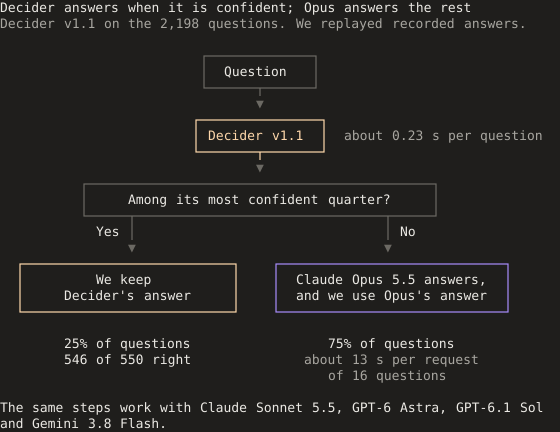
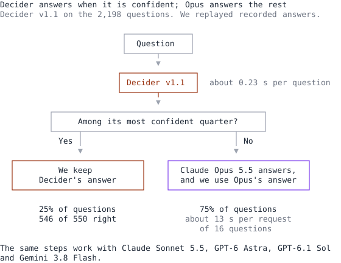
Why Decider
Why Decider v1.1?
Decider v1.1 is not the smartest model. On its own it gets 67% of these questions right; the best chat models get 98%. But it is fast, it is cheap, and it knows when it is right. That is what the first step needs.
- Fast. It answers one question in a typical 0.23 seconds through Perplexity's API. Fastino GLiDE takes 2.09 seconds. Claude Opus 5.5 takes a typical 13.40 seconds per request of 16 questions.
- Cheap. It costs $0.008 per 1,000 questions. Opus costs $4.93 for the same 1,000 questions.
- The most confident-and-right answers. At a 99% cutoff it kept 349 answers, with no mistakes. The other decision models with no mistakes at that cutoff kept 121 (GLiDE) and 21 (Decider v1).
- It tells its good answers from its bad ones. Its ranking score (AUROC) is 0.84, the highest of all decision models; Claude Opus 5.5's written confidence scores 0.84. The ranking score asks: if we take one right answer and one wrong answer at random, how often does the right one have the higher confidence? 0.5 is a coin flip; 1.0 is perfect.
- Its numbers mean what they say. On average, its confidence and its real hit rate differ by 3.8 percentage points; we call this the calibration gap (ECE). Opus's written numbers differ by 16.5 points.
- It does not change its mind. We asked all 2,198 questions five times. It gave the same answer every time.
- A big step up from version 1. It is 6.5 points more accurate (66.9% against 60.4%) and keeps 17 times more answers at 99% (349 against 21). It also costs half as much, because Perplexity cut its price between the two runs.
GLiDE comes close. In front of Opus, with the cutoff chosen on half the questions, it takes less of the work than Decider (21.8% against 25.2%) but loses less accuracy (0.10 against 0.23 points). Decider wins on speed and price: 0.23 against 2.09 seconds, and $0.008 against $0.16 per 1,000 questions.
![Bar chart: the share of answers each first model supplies before GPT-6 Astra, averaged over 300 test splits. Decision models through a provider's service: Perplexity Decider 27B v1.1 20.9%, Fastino GLiDE 20.1%, Perplexity Decider 27B v1 18.6%, Celeris-1 Decision 15.9%, Jev 1.13.0 15.3%, Liquid d1 14.3%, GPT-6 Luna (Decisions API, beta) 8.2%. For comparison, the chat model Gemma 4 31B (reasoning off) 14.9%. A second column gives each pair's average accuracy change against Astra alone. We replayed recorded answers.](charts/first-models-dark.svg)
![Bar chart: the share of answers each first model supplies before GPT-6 Astra, averaged over 300 test splits. Decision models through a provider's service: Perplexity Decider 27B v1.1 20.9%, Fastino GLiDE 20.1%, Perplexity Decider 27B v1 18.6%, Celeris-1 Decision 15.9%, Jev 1.13.0 15.3%, Liquid d1 14.3%, GPT-6 Luna (Decisions API, beta) 8.2%. For comparison, the chat model Gemma 4 31B (reasoning off) 14.9%. A second column gives each pair's average accuracy change against Astra alone. We replayed recorded answers.](charts/first-models.svg)
Show all first models
![Bar chart with every first model: the share of answers each first model supplies before GPT-6 Astra, averaged over 300 test splits. Decision models through a provider's service: Perplexity Decider 27B v1.1 20.9%, Fastino GLiDE 20.1%, Perplexity Decider 27B v1 18.6%, Celeris-1 Decision 15.9%, Jev 1.13.0 15.3%, Liquid d1 14.3%, GPT-6 Luna (Decisions API, beta) 8.2%. For comparison, the chat model Gemma 4 31B (reasoning off) 14.9%. A second column gives each pair's average accuracy change against Astra alone. We replayed recorded answers.](charts/first-models-all-dark.svg)
![Bar chart with every first model: the share of answers each first model supplies before GPT-6 Astra, averaged over 300 test splits. Decision models through a provider's service: Perplexity Decider 27B v1.1 20.9%, Fastino GLiDE 20.1%, Perplexity Decider 27B v1 18.6%, Celeris-1 Decision 15.9%, Jev 1.13.0 15.3%, Liquid d1 14.3%, GPT-6 Luna (Decisions API, beta) 8.2%. For comparison, the chat model Gemma 4 31B (reasoning off) 14.9%. A second column gives each pair's average accuracy change against Astra alone. We replayed recorded answers.](charts/first-models-all.svg)
Show the numbers, with the cost of each pair
| Model answering first | Questions handled by the first model | Accuracy change compared with Astra alone | Estimated combined cost per 1,000 questions |
|---|---|---|---|
| Decision models | |||
| Perplexity Decider 27B v1.1 | 20.9% | 0.13 points lower | $4.26 |
| Fastino GLiDE | 20.1% | 0.09 points lower | $4.46 |
| Perplexity Decider 27B v1 | 18.6% | 0.10 points lower | $4.39 |
| Celeris-1 Decision | 15.9% | 0.13 points lower | $4.54 |
| Jev 1.13.0 | 15.3% | 0.11 points lower | $4.58 |
| Liquid d1 | 14.3% | 0.12 points lower | $4.61the first model used a free tier; this assumes no charge for it |
| Open-Jev 27B v1.1 | 12.4% | 0.09 points lower | $4.71plus the first model's hardware cost, which we have not estimated |
| Cygnet | 11.7% | 0.08 points lower | $4.75plus the first model's hardware cost, which we have not estimated |
| Clef | 11.2% | 0.14 points lower | $4.78plus the first model's hardware cost, which we have not estimated |
| Winnow-12B | 9.2% | 0.09 points lower | $4.88plus the first model's hardware cost, which we have not estimated |
| GPT-6 Luna (Decisions API, beta) | 8.2% | 0.09 points lower | $4.98 |
| Metask-Jev 4B | 2.9% | 0.09 points lower | $5.22plus the first model's hardware cost, which we have not estimated |
| Clef-flash | 0.9% | 0.08 points lower | $5.33plus the first model's hardware cost, which we have not estimated |
| Strands Decider 2B | 0.8% | 0.09 points lower | $5.34plus the first model's hardware cost, which we have not estimated |
| Chat model for comparison | |||
| Gemma 4 31B (reasoning off) | 14.9% | 0.09 points lower | $4.58plus the first model's hardware cost, which we have not estimated |
Astra alone costs an estimated $5.38 per 1,000 questions. This estimate gives each question passed to the second model the same average cost. In a new run, the remaining questions may cost more.
Speed
How fast does Decider answer?
Decider v1.1 answers one question in a typical 0.23 seconds. Nine in ten answers arrive within 0.29 seconds.
| Model | Questions per request | Typical response time | 9 in 10 within |
|---|---|---|---|
| Perplexity Decider 27B v1.1 | 1 | 233 ms | 290 ms |
| Fastino GLiDE | 1 | 2.09 s | 2.28 s |
| Claude Opus 5.5 (low reasoning) | 16 | 13.40 s | 19.80 s |
| Claude Sonnet 5.5 (high reasoning) | 16 | 20.49 s | 37.05 s |
| GPT-6 Astra (low reasoning)Separate test: one question per request | 1 | 6.14 s | 8.57 s |
| GPT-6 Astra (low reasoning) | 16 | 13.04 s | 16.78 s |
The questions Decider keeps come back in a quarter of a second, without waiting for Opus or Sonnet. The other questions wait that long, then go to the stronger model.
We also timed the whole two-step setup on the live test's 1,099 questions, with the cutoff chosen on half the questions: one question per request, one request at a time. Decider v1.1's times come from its recorded run; each LLM answered with new calls, alone and after Decider v1.1. With Decider v1.1 first, the typical wait per question went from 4.77 s to 400 ms with Sonnet, from 3.77 s to 3.92 s with Opus and from 6.67 s to 6.63 s with Astra. The average wait fell 34% with Sonnet, fell 11% with Opus and rose 42% with Astra. The longest request with Astra took 395 seconds after Decider v1.1 and 29 seconds alone; the averages include such waits.
On their own, with one question per request, Sonnet got 89.35% right, Opus got 92.72% right and Astra got 97.54% right; with 16 questions per request, 84.90%, 89.35% and 97.45%. With Decider v1.1 first, Sonnet got 4.73 points fewer right (95% interval −6.47 to −2.99 points; exact McNemar test, p < 0.0001). We chose every cutoff on recorded answers to 16 questions per request. With Opus and Astra, the test did not establish a change in accuracy.
| LLM | LLM alone | Decider v1.1, then the LLM |
|---|---|---|
| Claude Sonnet 5.5 (high reasoning) | Typical 4.77 s9 in 10 within 8.73 sAverage 5.52 sCorrect answers: 89.35% | Typical 400 ms9 in 10 within 8.89 sAverage 3.63 sCorrect answers: 84.62%Kept by Decider v1.1: typical 232 msPassed on: typical 5.99 s |
| Claude Opus 5.5 (low reasoning) | Typical 3.77 s9 in 10 within 6.16 sAverage 4.27 sCorrect answers: 92.72% | Typical 3.92 s9 in 10 within 6.13 sAverage 3.82 sCorrect answers: 93.36%Kept by Decider v1.1: typical 231 msPassed on: typical 4.33 s |
| GPT-6 Astra (low reasoning) | Typical 6.67 s9 in 10 within 9.73 sAverage 7.25 sCorrect answers: 97.54% | Typical 6.63 s9 in 10 within 10.14 sAverage 10.27 sCorrect answers: 97.27%Kept by Decider v1.1: typical 231 msPassed on: typical 7.20 s |
We measure from our own computer, so times include the network and any retries. GLiDE ran 4 requests at a time; the others ran one at a time. In the first table, the Opus, Sonnet and Astra times come from five runs on the same 200 questions; Astra's one-question times come from a separate test on those 200 questions.
![Two panels. Left, the estimated cost per 1,000 questions in US dollars on a logarithmic scale; right, the waiting time for one request, typical and 9 in 10 within. Perplexity Decider 27B v1.1, 1 question per request: $0.008 per 1,000 questions, typical 233 ms, 9 in 10 within 290 ms; Fastino GLiDE, 1 question per request: $0.16 per 1,000 questions, typical 2.09 s, 9 in 10 within 2.28 s; Claude Opus 5.5 (low reasoning), 16 questions per request: $4.93 per 1,000 questions, typical 13.40 s, 9 in 10 within 19.80 s; Claude Sonnet 5.5 (high reasoning), 16 questions per request: $3.65 per 1,000 questions, typical 20.49 s, 9 in 10 within 37.05 s; GPT-6 Astra (low reasoning), 1 question per request: $5.38 per 1,000 questions, typical 6.14 s, 9 in 10 within 8.57 s; GPT-6 Astra (low reasoning), 16 questions per request: $5.38 per 1,000 questions, typical 13.04 s, 9 in 10 within 16.78 s.](charts/cost-time-dark.svg)
![Two panels. Left, the estimated cost per 1,000 questions in US dollars on a logarithmic scale; right, the waiting time for one request, typical and 9 in 10 within. Perplexity Decider 27B v1.1, 1 question per request: $0.008 per 1,000 questions, typical 233 ms, 9 in 10 within 290 ms; Fastino GLiDE, 1 question per request: $0.16 per 1,000 questions, typical 2.09 s, 9 in 10 within 2.28 s; Claude Opus 5.5 (low reasoning), 16 questions per request: $4.93 per 1,000 questions, typical 13.40 s, 9 in 10 within 19.80 s; Claude Sonnet 5.5 (high reasoning), 16 questions per request: $3.65 per 1,000 questions, typical 20.49 s, 9 in 10 within 37.05 s; GPT-6 Astra (low reasoning), 1 question per request: $5.38 per 1,000 questions, typical 6.14 s, 9 in 10 within 8.57 s; GPT-6 Astra (low reasoning), 16 questions per request: $5.38 per 1,000 questions, typical 13.04 s, 9 in 10 within 16.78 s.](charts/cost-time.svg)
Cutoff
Lower the cutoff: keep more, risk more
The cutoff decides how much work Decider takes. A lower cutoff keeps more answers and saves more money, but lets more mistakes through.
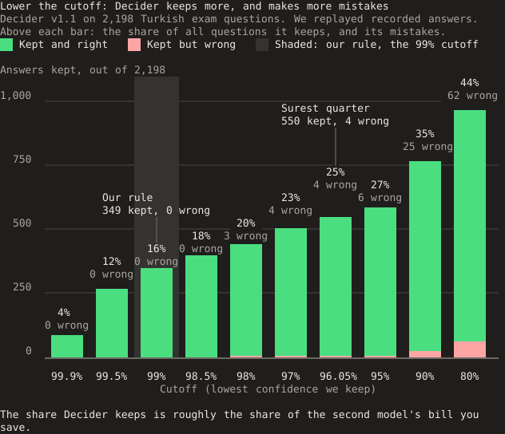
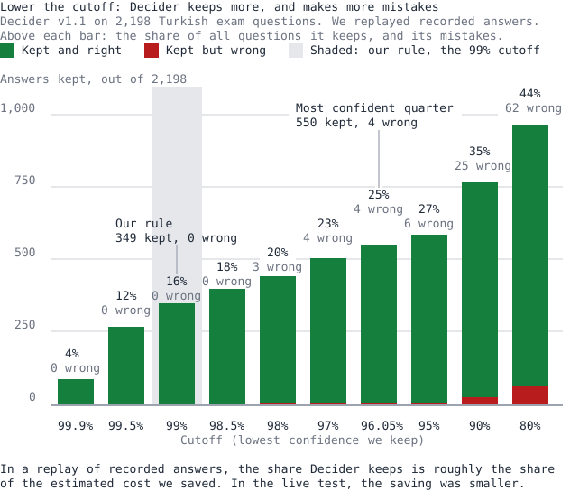
Show the numbers
| Cutoff | Answers kept | Share of all questions | Wrong among kept |
|---|---|---|---|
| 99.9% | 90 | 4.1% | 0 |
| 99.5% | 268 | 12.2% | 0 |
| 99% (our rule) | 349 | 15.9% | 0 |
| 98.5% | 402 | 18.3% | 0 |
| 98% | 443 | 20.2% | 3 |
| 97% | 505 | 23.0% | 4 |
| 96.05% (most confident quarter) | 550 | 25.0% | 4 |
| 95% | 589 | 26.8% | 6 |
| 90% | 767 | 34.9% | 25 |
| 80% | 970 | 44.1% | 62 |
We did not make 98.5% our rule, although it kept more answers with no mistakes: we only know that because we looked at the answers. 99% is a round number we set in advance.


- At 99%, Decider keeps 16% of the answers, with no mistakes.
- At 96.05%, its most confident quarter, it keeps 25%, with 4 mistakes.
- At 90%, it keeps 35%, with 25 mistakes.
Choose the cutoff on one set of questions, then test it on new ones. If you choose and test it on the same questions, the result looks better than it is.
Savings
How much do you save?
Decider works in front of any model. In the replay, the saving is roughly the share of questions it takes away from that model. The first two tables replay answers we recorded. The third comes from a live test with new calls to each LLM.
The three rules we tested:
- Fixed 99% rule: we keep Decider's answer when its confidence is 99% or higher. The cutoff is the same for every LLM.
- Most confident quarter: we keep Decider's 25% most confident answers. We fix the share in advance, so the answer key cannot tune it.
- Cutoff chosen on half the questions: for each LLM, we choose the lowest cutoff at which Decider's kept answers are right at least as often as the LLM's, using half of the questions. Then we test that cutoff on the other half, over 300 random splits.
| Model behind Decider | Its accuracy alone | Most confident quarter | Cutoff chosen on half the questions | Fixed 99% rule |
|---|---|---|---|---|
| Claude Sonnet 5.5 (high reasoning) | 85.0% | 24.8% cheaper, 0.59 points higher | Decider takes 48.3%: 48.1% cheaper, 0.10 points lower | 15.7% cheaper, 0.27 points higher |
| Claude Opus 5.5 (low reasoning) | 90.4% | 24.9% cheaper, 0.09 points lower | Decider takes 25.2%: 25.0% cheaper, 0.23 points lower | 15.7% cheaper, no change |
| GPT-6 Astra (low reasoning) | 97.6% | 24.9% cheaper, 0.14 points lower | Decider takes 20.9%: 20.8% cheaper, 0.13 points lower | 15.7% cheaper, no change |
| GPT-6.1 Sol (low reasoning) | 96.7% | 24.3% cheaper, 0.14 points lower | Not run | 15.2% cheaper, no change |
| Gemini 3.8 Flash (low reasoning) | 93.3% | 22.1% cheaper, 0.18 points lower | Not run | 13.0% cheaper, no change |
| LLM | LLM alone | Decider and LLM |
|---|---|---|
| Claude Sonnet 5.5 (high reasoning) | $3.65 | $3.08 |
| Claude Opus 5.5 (low reasoning) | $4.93 | $4.16 |
| GPT-6 Astra (low reasoning) | $5.38 | $4.53 |
| LLM | Most confident quarter | Cutoff chosen on half the questions | Fixed 99% rule |
|---|---|---|---|
| Claude Sonnet 5.5 (high reasoning) | Decider kept 25.0%: 18.3% cheaper, 1.18 points higher | Decider kept 50.8%: 37.5% cheaper, 0.64 points lower | Decider kept 16.0%: 10.6% cheaper, 0.82 points higher |
| Claude Opus 5.5 (low reasoning) | Decider kept 25.0%: 23.3% cheaper, 0.64 points lower | Decider kept 19.9%: 18.6% cheaper, 0.09 points lower | Decider kept 16.0%: 18.0% cheaper, 0.91 points lower |
| GPT-6 Astra (low reasoning) | Decider kept 25.0%: 17.6% cheaper, 0.36 points lower | Decider kept 19.9%: 11.9% cheaper, no change | Decider kept 16.0%: 14.8% cheaper, 0.09 points higher |
- Why Opus and Sonnet gain more: on this test they make more mistakes than Astra (90.4% and 85.0% right, against 97.6%). Decider's confident answers replace more of their mistakes. On this test, Decider helped most where the second model was weakest.
- Most confident quarter: on 300 random halves of the questions, it raised Sonnet's accuracy every time and lowered Opus's a little in 72% of them.
- Cutoff chosen on half the questions: it lowered accuracy a little in 67% of splits for Opus, 45% for Sonnet and 54% for Astra.
- Even the cheaper GPT-6.1 Sol gets cheaper: at 99%, Decider takes 15% off Sol's bill with no change in accuracy.
- We estimate cost at each company's list price. Decider sees every question. The second model charges only for the questions it answers, at its average cost per question. This estimate gives each question passed to the second model the same average cost. In a new run, the remaining questions may cost more.
- Live test: each LLM answered, with new calls, the questions Decider passed on, on 1,099 questions we had not used to set the cutoff. Its savings were smaller than the replay's in eight of the nine tests. The live test used one split of the questions instead of 300, and each LLM's own cost for the questions passed to it instead of its average cost (see What happened in a live test?).
Confidence
What happens if we keep only answers with at least 99% confidence?
This is a separate check with one fixed cutoff. We keep every recorded answer with a confidence of at least 99%. Every other question needs another answer. We do not add a second model's answers in this chart.
We kept 349 of Decider v1.1's answers, 15.9% of the questions. All 349 were right by the checked answer key. The other 1,849 questions need another answer, from another model or a person.
Decider v1.1 kept more answers with no mistakes than any other decision model at this cutoff. GLiDE kept 121, also with no mistakes. Luna through the Decisions API kept 368, with three mistakes. Jev kept 312, with one mistake. Liquid d1 kept 274, with one mistake.
No mistakes in a sample does not prove zero risk. For Decider v1.1, the 95% interval for the error rate runs from 0% to 1.1%. For GLiDE, it runs from 0% to 3.1%. GLiDE kept fewer answers, so its interval is wider. A 95% interval is not a model's confidence: Decider v1.1's 99% is its own score for one answer, while the 95% interval is the range our statistics give for the error rate we measured. These intervals describe sampling uncertainty under the method's assumptions. They do not promise an error limit on your next task.
Which answers pass a 99% confidence cutoff?
Kept and correct Kept but wrong Needs another answer


Show the numbers
| Model and setup | Where the confidence score comes from | Answers we keepat 99% confidence or higher | Wrong answers among those we keep | 95% interval for the error rate ?A range describing sampling uncertainty in this measured rate. It does not cover every source of error or guarantee a future rate. |
|---|---|---|---|---|
| Perplexity Decider 27B v1.1 | Option score | 34915.9% of all questions | 00% of the kept answers | 0% to 1.1% |
| Perplexity Decider 27B v1 | Option score | 211.0% of all questions | 00% of the kept answers | 0% to 15.5% |
| Fastino GLiDE | Option score | 1215.5% of all questions | 00% of the kept answers | 0% to 3.1% |
| Jev 1.13.0 | Option score | 31214.2% of all questions | 10.3% of the kept answers | 0.1% to 1.8% |
| Liquid d1 | Option score | 27412.5% of all questions | 10.4% of the kept answers | 0.1% to 2.0% |
| Celeris-1 Decision | Option score | 0No answers reach this cutoff | Not applicable | Not applicable |
| GPT-6 Luna · Decisions API, beta | Option score | 36816.7% of all questions | 30.8% of the kept answers | 0.3% to 2.4% |
| GPT-6 Luna · low reasoning | Written estimate | 83037.8% of all questions | 13716.5% of the kept answers | 14.1% to 19.2% |
Luna shows why the source of confidence matters. Through the Decisions API, 365 of its 368 kept answers were right. When Luna wrote its own confidence, 693 of 830 were right. The two runs also used different access methods, and 1 against 16 questions per request. So we cannot put the whole difference down to the source of confidence.
Celeris 1 gave no answer a confidence of 99% or more, so we kept none of its answers. This does not mean it cannot help as a first model. In the separate replay in front of Astra, where we chose a cutoff for each model, Celeris took 15.9% of the questions.
- We apply the cutoff to the stored scores, before we round numbers for display. Some services report scores only to the nearest whole percentage point. For those services, reported scores of 99% and 100% pass this rule.
- These counts use the answer key after our review. That review focused on earlier runs and removed some confident mistakes. Later runs did not get the same review. The intervals do not account for this uneven review or for the doubt that remains in the answer key. The method section explains how we calculate the 95% interval.
- This section tests one cutoff. The full confidence results also check whether the scores rank answers usefully and whether the percentages match how often the answers are right.
Accuracy
How often do decision models get the answer right?
On all 2,198 questions, GLiDE answered 67.9% correctly and Decider v1.1 66.9%. GLiDE's score was one percentage point higher. Our test did not establish a difference between them.
The stronger chat models answered many more questions right: Claude Opus 5.5 (low reasoning) reached 90.4%, Claude Sonnet 5.5 (high reasoning) 85.0% and GPT-6 Astra (low reasoning) 97.6%. We put Decider v1.1 first to keep its most confident answers at a low cost, and a stronger model such as Claude Opus 5.5 answers the rest.
Reading and grammar give different results. Decider v1.1 scored 89.0% on reading and 57.5% on grammar. Gemma 4 31B scored 90.9% and 65.6%. So Gemma 4 31B beat every decision model on both, even though its grammar score was much lower than its own reading score. GPT-6 Astra scored 97.0% and 97.9%.
The test has 656 reading questions and 1,542 grammar questions. Grammar makes up about 70% of all questions, so it counts for more in the overall score. Look at both task scores before you choose a model.
Training, model size and task difficulty could all affect these results. This test does not separate their effects.
How often do models get reading and grammar questions right?
Reading: 656 questions. Grammar: 1,542 questions. Each bar shows correct answers, from 0% to 100%.
Decision models
Chat models for comparison


Decision model: picks from the options we give it and gives each option a score. It writes no text. Select a model's name to see how we called it, its reasoning setting, the questions in each request and the date the test started.
The table shows the 10 setups in this page's figures: decision models first, then chat models, each by correct answers overall. This order is not a statistical rank. “Show all 36 model setups” lists every setup.
| Model and setup | Correct answers overall | Reading accuracy | Grammar accuracy | Comparison group ?The all pairs test did not detect a difference from setups sharing a letter. This does not establish equality. |
|---|---|---|---|---|
| Decision models | ||||
Fastino GLiDE
| 67.9% | 87.8% | 59.4% | h |
Perplexity Decider 27B v1.1
| 66.9% | 89.0% | 57.5% | hi |
GPT-6 Luna · Decisions API, beta
| 63.6% | 85.5% | 54.3% | ij |
Celeris-1 Decision
| 60.5% | 85.2% | 49.9% | jklm |
Perplexity Decider 27B v1
| 60.4% | 86.0% | 49.5% | jkl |
Jev 1.13.0
| 57.5% | 83.7% | 46.4% | klmn |
Liquid d1
| 57.0% | 82.8% | 46.0% | lmn |
| Chat models for comparison | ||||
GPT-6 Astra · low reasoning
| 97.6% | 97.0% | 97.9% | ab |
Gemma 4 31B · reasoning off
| 73.1% | 90.9% | 65.6% | g |
GPT-6 Luna · low reasoning
| 68.3% | 87.3% | 60.2% | h |
Show all 36 model setups
| Model and setup | Correct answers overall | Reading accuracy | Grammar accuracy | Comparison group ?The all pairs test did not detect a difference from setups sharing a letter. This does not establish equality. |
|---|---|---|---|---|
| Decision models | ||||
Fastino GLiDE
| 67.9% | 87.8% | 59.4% | h |
Perplexity Decider 27B v1.1
| 66.9% | 89.0% | 57.5% | hi |
GPT-6 Luna · Decisions API, beta
| 63.6% | 85.5% | 54.3% | ij |
Celeris-1 Decision
| 60.5% | 85.2% | 49.9% | jklm |
Perplexity Decider 27B v1
| 60.4% | 86.0% | 49.5% | jkl |
Jev 1.13.0
| 57.5% | 83.7% | 46.4% | klmn |
Clef
| 57.3% | 85.1% | 45.5% | mn |
Liquid d1
| 57.0% | 82.8% | 46.0% | lmn |
Cygnet
| 55.7% | 82.8% | 44.2% | n |
Open-Jev 27B v1.1
| 55.7% | 82.9% | 44.1% | n |
Winnow-12B
| 55.5% | 82.0% | 44.2% | no |
Clef-flash
| 45.7% | 73.0% | 34.1% | p |
Metask-Jev 4B
| 40.8% | 62.8% | 31.4% | q |
Strands Decider 2B
| 27.5% | 36.9% | 23.5% | r |
GLiNER2.5-multi-Decide
| 20.2% | 21.0% | 19.8% | s |
Laya
| 19.0% | 20.9% | 18.2% | s |
Laya multilingual
| 17.9% | 17.1% | 18.2% | s |
| Chat models and other models for comparison | ||||
Gemini 3.8 Flash · high reasoning
| 98.1% | 97.1% | 98.5% | a |
GPT-6 Astra · low reasoning
| 97.6% | 97.0% | 97.9% | ab |
GPT-6.1 Sol · low reasoning
| 96.7% | 96.2% | 96.9% | b |
Gemini 3.8 Flash · low reasoning
| 93.3% | 95.1% | 92.5% | c |
DeepSeek-V4.1-Flash · reasoning on
| 92.0% | 93.4% | 91.4% | cd |
Claude Opus 5.5 · low reasoning
| 90.4% | 94.8% | 88.6% | d |
Claude Sonnet 5.5 · high reasoning
| 85.0% | 85.2% | 85.0% | e |
GLM-5.3-Flash · reasoning on
| 78.8% | 89.3% | 74.3% | f |
Gemma 4 31B · reasoning off
| 73.1% | 90.9% | 65.6% | g |
GPT-6 Luna · low reasoning
| 68.3% | 87.3% | 60.2% | h |
DeepSeek-V4.1-Flash · reasoning off
| 65.9% | 87.8% | 56.6% | hi |
Claude Sonnet 5.5 · low reasoning
| 61.4% | 82.9% | 52.2% | jk |
GLM-5.3-Flash · reasoning off
| 57.8% | 82.2% | 47.4% | klmn |
Qwen3.8-27B · vote share, reasoning off
| 54.3% | 84.0% | 41.7% | no |
Qwen3.8-27B · stated confidence, reasoning off
| 54.2% | 83.4% | 41.8% | no |
Qwen3.8-27B · yes/no scoring
| 51.9% | 80.5% | 39.8% | o |
Qwen3-14B · reasoning off
| 45.7% | 72.1% | 34.5% | p |
Erk-14B · reasoning off
| 45.0% | 72.3% | 33.4% | pq |
GLiNER2.5 Multi (base)
| 17.5% | 17.2% | 17.6% | s |
Repeated answers
Does the model give the same answer again?
We asked the same questions five times with the same settings. Decider v1.1 chose the same answer every time on all 2,198 questions. It also gave the same wrong answer every time on 728 questions: every question it got wrong at least once.
Stable answers make a system easier to inspect. They do not make a wrong answer right.
The table counts a question as changed if the runs did not all choose the same option. It does not estimate the chance that the next request will change its answer. Compare models within each group. The groups use different questions and request formats.
Full question set: 2,198 questions, one question per request, five runs
| Model and setup | Questions where the answer changed | Questions with the same wrong answer in all five runs |
|---|---|---|
| Open-Jev 27B v1.1 | 00.0% of questions | 974out of the 974 questions answered wrongly at least once |
| Perplexity Decider 27B v1.1 | 00.0% of questions | 728out of the 728 questions answered wrongly at least once |
| Perplexity Decider 27B v1 | 20.1% of questions | 869out of the 871 questions answered wrongly at least once |
| Qwen3.8-27B · stated confidence, reasoning off | 442.0% of questions | 975out of the 1,019 questions answered wrongly at least once |
| Qwen3.8-27B · yes/no scoring | 1607.3% of questions | 949out of the 1,109 questions answered wrongly at least once |
| Celeris-1 Decision | 2069.4% of questions | 738out of the 944 questions answered wrongly at least once |
| Liquid d1 | 2179.9% of questions | 799out of the 1,016 questions answered wrongly at least once |
| Jev 1.13.0 | 31414.3% of questions | 721out of the 1,035 questions answered wrongly at least once |
Smaller question set: 200 questions, 16 questions per request, five runs
| Model and setup | Questions where the answer changed | Questions with the same wrong answer in all five runs |
|---|---|---|
| Gemma 4 31B · reasoning off | 00.0% of questions | 59out of the 59 questions answered wrongly at least once |
| GPT-6 Astra · low reasoning | 10.5% of questions | 4out of the 5 questions answered wrongly at least once |
| DeepSeek-V4.1-Flash · reasoning off | 126.0% of questions | 63out of the 75 questions answered wrongly at least once |
| DeepSeek-V4.1-Flash · reasoning on | 157.5% of questions | 5out of the 20 questions answered wrongly at least once |
| Claude Opus 5.5 · low reasoning | 2010.0% of questions | 2out of the 22 questions answered wrongly at least once |
| Claude Sonnet 5.5 · high reasoning | 3115.5% of questions | 9out of the 40 questions answered wrongly at least once |
Gemma 4 31B gave the same answers in every recorded run, all in one server session. We also noticed changes after a restart, but we did not save that rerun. So the published data support the result within the recorded session; they do not measure the effect of a restart (see Repeated tests).
Live test
What happened in a live test?
We ran the two-step setup live, with Decider v1.1 in front of each of the three LLMs. Decider v1.1's answers came from its recorded run; each LLM answered the questions it passed on, with new calls. We split the questions in half at random, keeping the questions about one passage together, and tested on one half: 1,099 questions. Each LLM also answered all 1,099 of them alone, in a separate run; for Sonnet and Astra, that run comes from our earlier live tests on the same questions.
We tested all three rules. With the cutoff chosen on half the questions, we set the cutoff on the other half. With the most confident quarter, Decider v1.1 kept its 275 most confident answers among the test questions. With the fixed 99% rule, it kept every answer at 99% or more, 176 of them.
With the cutoff chosen on half the questions, Decider v1.1 kept 51%, 20% and 20% of the questions in front of Sonnet, Opus and Astra, and the estimated cost fell 37%, 19% and 12%. The replay of recorded answers gave 48%, 25% and 21%. The replay averages 300 splits of the questions and gives every question passed to the LLM the same average cost. The live test used one split, and each LLM's own cost for the questions passed to it: a question passed to Sonnet cost 27% more than its average question, one passed to Opus 1% more and one passed to Astra 10% more.
With the most confident quarter, the estimated cost fell 18%, 23% and 18% for Sonnet, Opus and Astra. With the fixed 99% rule, it fell 11%, 18% and 15%.
Before the tests, we chose the largest accuracy loss we would accept: 0.5 percentage points. In six of the nine tests, the observed change stayed within it; in the tests with Sonnet and the cutoff chosen on half the questions, with Opus and the most confident quarter and with Opus and the fixed 99% rule, the observed loss was larger. In eight of the nine tests, the 95% interval also allows a larger loss, so those tests do not establish that the loss stays within our limit. None of the nine tests established a change in accuracy from the LLM alone: the exact McNemar test gave p = 0.25 or more.
Our first live tests used the earlier Decider v1, with the cutoff chosen on half the questions: in front of Sonnet, it kept 31.2% of the questions and the estimated cost fell 21.9%, with accuracy 0.09 points lower; in front of Astra, it kept 17.7% of the questions and the estimated cost fell 16.9%, with accuracy 0.36 points lower.
We also ran two cheaper models alone on the same 1,099 questions. GPT-6.1 Sol (low reasoning) scored 96.82% at an estimated $1.20 per 1,000 questions. Gemini 3.8 Flash (low reasoning) scored 91.08% at an estimated $0.27 per 1,000 questions. They can be good choices when their accuracy is enough for the task.
| Model or model pair | Final answers supplied by the first model | Correct answers | Accuracy change compared with the second model alone | Estimated cost per 1,000 questions | Total time for this test |
|---|---|---|---|---|---|
| In front of Claude Sonnet 5.5 (high reasoning) | |||||
| Claude Sonnet 5.5 alone (high reasoning) | Not applicable | 84.90% | Not applicable | $3.76 | 30.0 min |
| Decider v1.1, then SonnetMost confident quarter: confidence cutoff 96.42% | 275 of 1,09925.0% | 86.08%With new answers from the second modelReplay of recorded answers from both models: 85.53% | 1.18 points higher95% interval: −0.68 to +3.04 pointsAccuracy loss allowed before the test: 0.5 points. Observed change within the chosen limit. The 95% interval still allows a larger loss. | Combined cost $3.07Second model alone: $3.76Saving: 18.3% | Combined process: 31.4 minSecond model alone: 30.0 min |
| Decider v1.1, then SonnetCutoff chosen on half the questions: confidence cutoff 71.71% | 558 of 1,09950.8% | 84.26%With new answers from the second modelReplay of recorded answers from both models: 83.44% | 0.64 points lower95% interval: −2.83 to +1.55 pointsAccuracy loss allowed before the test: 0.5 points. Observed loss above the chosen limit. | Combined cost $2.35Second model alone: $3.76Saving: 37.5% | Combined process: 28.0 minSecond model alone: 30.0 min |
| Decider v1.1, then SonnetFixed 99% rule: confidence cutoff 99% | 176 of 1,09916.0% | 85.71%With new answers from the second modelReplay of recorded answers from both models: 84.99% | 0.82 points higher95% interval: −0.92 to +2.56 pointsAccuracy loss allowed before the test: 0.5 points. Observed change within the chosen limit. The 95% interval still allows a larger loss. | Combined cost $3.36Second model alone: $3.76Saving: 10.6% | Combined process: 33.4 minSecond model alone: 30.0 min |
| In front of Claude Opus 5.5 (low reasoning) | |||||
| Claude Opus 5.5 alone (low reasoning) | Not applicable | 89.35% | Not applicable | $4.90 | 15.5 min |
| Decider v1.1, then OpusMost confident quarter: confidence cutoff 96.42% | 275 of 1,09925.0% | 88.72%With new answers from the second modelReplay of recorded answers from both models: 90.45% | 0.64 points lower95% interval: −2.43 to +1.15 pointsAccuracy loss allowed before the test: 0.5 points. Observed loss above the chosen limit. | Combined cost $3.76Second model alone: $4.90Saving: 23.3% | Combined process: 18.5 minSecond model alone: 15.5 min |
| Decider v1.1, then OpusCutoff chosen on half the questions: confidence cutoff 98.25% | 219 of 1,09919.9% | 89.26%With new answers from the second modelReplay of recorded answers from both models: 90.45% | 0.09 points lower95% interval: −1.85 to +1.67 pointsAccuracy loss allowed before the test: 0.5 points. Observed change within the chosen limit. The 95% interval still allows a larger loss. | Combined cost $3.99Second model alone: $4.90Saving: 18.6% | Combined process: 18.9 minSecond model alone: 15.5 min |
| Decider v1.1, then OpusFixed 99% rule: confidence cutoff 99% | 176 of 1,09916.0% | 88.44%With new answers from the second modelReplay of recorded answers from both models: 90.54% | 0.91 points lower95% interval: −2.78 to +0.96 pointsAccuracy loss allowed before the test: 0.5 points. Observed loss above the chosen limit. | Combined cost $4.02Second model alone: $4.90Saving: 18.0% | Combined process: 18.0 minSecond model alone: 15.5 min |
| In front of GPT-6 Astra (low reasoning) | |||||
| GPT-6 Astra alone (low reasoning) | Not applicable | 97.45% | Not applicable | $5.16 | 16.5 min |
| Decider v1.1, then AstraMost confident quarter: confidence cutoff 96.42% | 275 of 1,09925.0% | 97.09%With new answers from the second modelReplay of recorded answers from both models: 97.27% | 0.36 points lower95% interval: −0.98 to +0.25 pointsAccuracy loss allowed before the test: 0.5 points. Observed change within the chosen limit. The 95% interval still allows a larger loss. | Combined cost $4.26Second model alone: $5.16Saving: 17.6% | Combined process: 18.6 minSecond model alone: 16.5 min |
| Decider v1.1, then AstraCutoff chosen on half the questions: confidence cutoff 98.25% | 219 of 1,09919.9% | 97.45%With new answers from the second modelReplay of recorded answers from both models: 97.27% | no change95% interval: −0.50 to +0.50 pointsAccuracy loss allowed before the test: 0.5 points. Observed change within the chosen limit. The 95% interval still allows a larger loss. | Combined cost $4.55Second model alone: $5.16Saving: 11.9% | Combined process: 19.8 minSecond model alone: 16.5 min |
| Decider v1.1, then AstraFixed 99% rule: confidence cutoff 99% | 176 of 1,09916.0% | 97.54%With new answers from the second modelReplay of recorded answers from both models: 97.36% | 0.09 points higher95% interval: −0.38 to +0.56 pointsAccuracy loss allowed before the test: 0.5 points. The whole 95% interval stays within the chosen limit. | Combined cost $4.40Second model alone: $5.16Saving: 14.8% | Combined process: 20.7 minSecond model alone: 16.5 min |
| Earlier tests with Perplexity Decider 27B v1 | |||||
| Decider v1, then SonnetCutoff chosen on half the questions: confidence cutoff 71.9% | 343 of 1,09931.2% | 84.80%With new answers from the second modelReplay of recorded answers from both models: 85.26% | 0.09 points lower95% interval: −1.95 to +1.77 pointsAccuracy loss allowed before the test: 0.5 points. Observed change within the chosen limit. The 95% interval still allows a larger loss. | Combined cost $2.93Second model alone: $3.76Saving: 21.9% | Combined process: 30.8 minSecond model alone: 30.0 min |
| Decider v1, then AstraCutoff chosen on half the questions: confidence cutoff 91.57% | 194 of 1,09917.7% | 97.09%With new answers from the second modelReplay of recorded answers from both models: 97.36% | 0.36 points lower95% interval: −0.80 to +0.07 pointsAccuracy loss allowed before the test: 0.5 points. Observed change within the chosen limit. The 95% interval still allows a larger loss. | Combined cost $4.29Second model alone: $5.16Saving: 16.9% | Combined process: 18.8 minSecond model alone: 16.5 min |
| Cheaper models alone on the same questions, against GPT-6 Astra (low reasoning) alone | |||||
| GPT-6.1 Sol alone (low reasoning) | Not applicable | 96.82% | 0.64 points lowercompared with GPT-6 Astra (low reasoning) alone; 95% interval: −1.28 to +0.00 points | $1.20GPT-6 Astra (low reasoning) alone: $5.16 | 22.7 min |
| Gemini 3.8 Flash alone (low reasoning) | Not applicable | 91.08% | 6.37 points lowercompared with GPT-6 Astra (low reasoning) alone; 95% interval: −7.94 to −4.80 points | $0.27GPT-6 Astra (low reasoning) alone: $5.16 | 5.0 min |
- The costs estimate model calls at published API prices. An API is the service a program uses to call a model. For subscription runs, we estimate what the same use would cost through the API. We did not measure human review time, the business cost of mistakes or the full cost of running a service.
- The time column adds up all requests in a test. It is not the waiting time for one question.
Test details: 95% intervals and p values
Each line gives the observed accuracy change, its 95% interval and the result of an exact McNemar test, which compares two setups on the questions only one of them got right. These live test comparisons do not use an adjustment for multiple tests. Comparing scores explains the tests.
On the 1,099 questions reserved for testing:
- Decider v1.1, then Claude Sonnet 5.5 (high reasoning), most confident quarter, against Claude Sonnet 5.5 (high reasoning) alone: 1.18 points higher (95% interval −0.68 to +3.04 points; exact McNemar test, p = 0.25).
- Decider v1.1, then Claude Sonnet 5.5 (high reasoning), cutoff chosen on half the questions, against Claude Sonnet 5.5 (high reasoning) alone: 0.64 points lower (95% interval −2.83 to +1.55 points; exact McNemar test, p = 0.63).
- Decider v1.1, then Claude Sonnet 5.5 (high reasoning), fixed 99% rule, against Claude Sonnet 5.5 (high reasoning) alone: 0.82 points higher (95% interval −0.92 to +2.56 points; exact McNemar test, p = 0.41).
- Decider v1.1, then Claude Opus 5.5 (low reasoning), most confident quarter, against Claude Opus 5.5 (low reasoning) alone: 0.64 points lower (95% interval −2.43 to +1.15 points; exact McNemar test, p = 0.55).
- Decider v1.1, then Claude Opus 5.5 (low reasoning), cutoff chosen on half the questions, against Claude Opus 5.5 (low reasoning) alone: 0.09 points lower (95% interval −1.85 to +1.67 points; exact McNemar test, p = 1).
- Decider v1.1, then Claude Opus 5.5 (low reasoning), fixed 99% rule, against Claude Opus 5.5 (low reasoning) alone: 0.91 points lower (95% interval −2.78 to +0.96 points; exact McNemar test, p = 0.39).
- Decider v1.1, then GPT-6 Astra (low reasoning), most confident quarter, against GPT-6 Astra (low reasoning) alone: 0.36 points lower (95% interval −0.98 to +0.25 points; exact McNemar test, p = 0.39).
- Decider v1.1, then GPT-6 Astra (low reasoning), cutoff chosen on half the questions, against GPT-6 Astra (low reasoning) alone: no change (95% interval −0.50 to +0.50 points; exact McNemar test, p = 1).
- Decider v1.1, then GPT-6 Astra (low reasoning), fixed 99% rule, against GPT-6 Astra (low reasoning) alone: 0.09 points higher (95% interval −0.38 to +0.56 points; exact McNemar test, p = 1).
- Decider v1, then Claude Sonnet 5.5 (high reasoning), cutoff chosen on half the questions, against Claude Sonnet 5.5 (high reasoning) alone: 0.09 points lower (95% interval −1.95 to +1.77 points; exact McNemar test, p = 1).
- Decider v1, then GPT-6 Astra (low reasoning), cutoff chosen on half the questions, against GPT-6 Astra (low reasoning) alone: 0.36 points lower (95% interval −0.80 to +0.07 points; exact McNemar test, p = 0.22).
- GPT-6.1 Sol alone (low reasoning) against GPT-6 Astra (low reasoning) alone: 0.64 points lower (95% interval −1.28 to +0.00 points; exact McNemar test, p = 0.092).
- Gemini 3.8 Flash alone (low reasoning) against GPT-6 Astra (low reasoning) alone: 6.37 points lower (95% interval −7.94 to −4.80 points; exact McNemar test, p < 0.0001).
Access and price details
- Perplexity Decider 27B v1.1. How we called the model: Perplexity Decisions API (Provider service). One question per request, one request at a time. Estimated from published prices and recorded token usage. Prices recorded 9 October 2026. Per one million tokens: input $0.02; output $0. Source: Perplexity's Decisions API price.
- Claude Sonnet 5.5 (high reasoning). How we called the model: Claude Code CLI, Claude subscription (Subscription). Sixteen questions per request, one request at a time. Subscription run priced as if we had used the API. Prices recorded 8 October 2026. Per one million tokens: input $2; reused input $0.10; saving input for reuse for one hour $4; output $10. Source: Anthropic's API list price.
- Claude Opus 5.5 (low reasoning). How we called the model: Claude Code CLI, Claude subscription (Subscription). Sixteen questions per request, one request at a time. Subscription run priced as if we had used the API. Prices recorded 8 October 2026. Per one million tokens: input $4; reused input $0.20; saving input for reuse for one hour $8; output $20. Source: Anthropic's API list price.
- GPT-6 Astra (low reasoning). How we called the model: Codex CLI, ChatGPT subscription (Subscription). Sixteen questions per request, one request at a time. Subscription run priced as if we had used the API. Prices recorded 8 October 2026. Per one million tokens: input $10; reused input $1; output $50. Source: OpenAI's API list price.
- Perplexity Decider 27B v1. How we called the model: Perplexity Decisions API (Provider service). One question per request, one request at a time. Estimated from published prices and recorded token usage. Prices recorded 4 October 2026. Per one million tokens: input $0.04; output $0. Source: Perplexity's Decisions API price. Price note: $0.02 per 1M input tokens since, as listed on 8 October 2026.
- GPT-6.1 Sol (low reasoning). How we called the model: Codex CLI, ChatGPT subscription (Subscription). Sixteen questions per request, one request at a time. Subscription run priced as if we had used the API. Prices recorded 8 October 2026. Per one million tokens: input $2; reused input $0.10; output $10. Source: OpenAI's API list price.
- Gemini 3.8 Flash (low reasoning). How we called the model: Gemini API (Provider service). Sixteen questions per request, one request at a time. Estimated from published prices and recorded token usage. Prices recorded 8 October 2026. Per one million tokens: input $0.75; output $3.75. Source: Google's Gemini API price, introductory. Price note: doubles on 1 January 2027, to $1.50 input and $7.50 output per 1M tokens.
A service may save input so a later call can reuse it. It may charge one rate to save it and another to read it again.
Cost
What does each model cost, and how long do we wait?
Decider v1.1 answered a single question in a typical 233 milliseconds. 9 in 10 requests finished within 290 milliseconds. Its estimated cost was $0.008 per 1,000 questions. Those figures make it a promising first model to try before a stronger model such as Claude Opus 5.5.
“Typical” is the median: half the requests finished sooner and half took longer. “9 in 10 within” is the 90th percentile: the time within which nine out of ten requests finished.
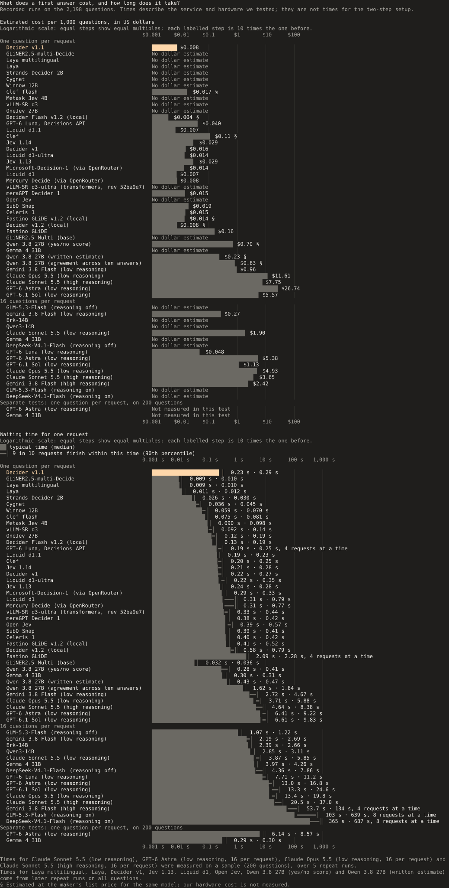
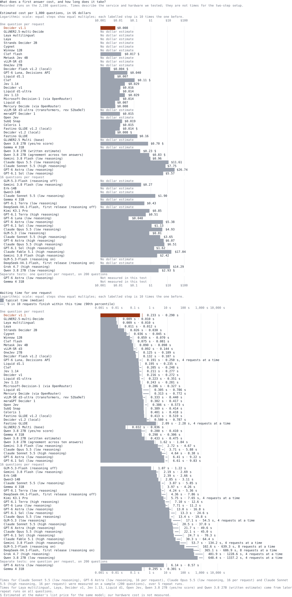
Cost and response time for each model
This table uses all 2,198 scored questions. The live test used 1,099 questions, so its cost estimates differ slightly: GPT-6 Astra costs an estimated $5.38 per 1,000 questions here and $5.16 in that test.
| Model and setup | Correct answersall 2,198 questions | Estimated cost per 1,000 questions | Response time per requesttypical; 9 in 10 within | Answers kept at 99% confidence or highershare of questions; wrong among them |
|---|---|---|---|---|
| Decision models | ||||
| Perplexity Decider 27B v1.1 | 66.9% | $0.008Estimated from published prices and recorded token usage | Typical 233 ms; 9 in 10 within 290 msOne question per request. Main run. One request at a time. | 34915.9% of questions; 0 wrong |
| Fastino GLiDE | 67.9% | $0.16Estimated from published prices and recorded token usage | Typical 2.09 s; 9 in 10 within 2.28 sOne question per request. Main run. 4 simultaneous requests. | 1215.5% of questions; 0 wrong |
| GPT-6 Luna · Decisions API, beta | 63.6% | $0.040Estimated from published prices and recorded token usage | Typical 191 ms; 9 in 10 within 250 msOne question per request. Main run. 4 simultaneous requests. | 36816.7% of questions; 3 wrong |
| Celeris-1 Decision | 60.5% | $0.015Estimated from published prices and recorded token usage | Typical 401 ms; 9 in 10 within 418 msOne question per request. Main run. One request at a time. | 0No answers reach this cutoff |
| Perplexity Decider 27B v1 | 60.4% | $0.016Estimated from published prices and recorded token usage | Typical 216 ms; 9 in 10 within 272 msOne question per request. Times from repeats 2 to 5 of the same setup. One request at a time. | 211.0% of questions; 0 wrong |
| Jev 1.13.0 | 57.5% | $0.029Estimated from published prices and recorded token usage | Typical 243 ms; 9 in 10 within 281 msOne question per request. Times from repeats 2 to 5 of the same setup. One request at a time. | 31214.2% of questions; 1 wrong |
| Liquid d1 | 57.0% | Free tier used; no paid price in this record | Typical 305 ms; 9 in 10 within 786 msOne question per request. Times from repeats 2 to 5 of the same setup. One request at a time. | 27412.5% of questions; 1 wrong |
| Chat models for comparison | ||||
| Gemma 4 31B · reasoning off | 73.1% | No dollar estimate; see hardware and timeHardware we used: 1 × RTX PRO 6000 Blackwell (96 GB); FP8 weights and KV cache | Typical 3.97 s; 9 in 10 within 4.26 sOne request contains 16 questions; the time covers the whole request. Main run. One request at a time.Separate test: one question per request, 200 questions. Typical 295 ms; 9 in 10 within 301 ms. | 1,78281.1% of questions; 332 wrong |
| Gemini 3.8 Flash · low reasoning | 93.3% | $0.27Estimated from published prices and recorded token usage | Typical 2.19 s; 9 in 10 within 2.69 sOne request contains 16 questions; the time covers the whole request. Main run. One request at a time. | 97644.4% of questions; 15 wrong |
| GPT-6.1 Sol · low reasoning | 96.7% | $1.13Subscription run priced as if we had used the API | Typical 13.27 s; 9 in 10 within 24.61 sOne request contains 16 questions; the time covers the whole request. Main run. One request at a time. | 1,61073.2% of questions; 13 wrong |
| GPT-6 Astra · low reasoning | 97.6% | $5.38Subscription run priced as if we had used the API | Typical 13.04 s; 9 in 10 within 16.78 sOne request contains 16 questions; the time covers the whole request. Times from five runs of the same 200 questions. One request at a time.Separate test: one question per request, 200 questions. Typical 6.14 s; 9 in 10 within 8.57 s. | 1,72578.5% of questions; 5 wrong |
| Claude Opus 5.5 · low reasoning | 90.4% | $4.93Subscription run priced as if we had used the API | Typical 13.40 s; 9 in 10 within 19.80 sOne request contains 16 questions; the time covers the whole request. Times from five runs of the same 200 questions. One request at a time. | 0No answers reach this cutoff |
| Claude Sonnet 5.5 · high reasoning | 85.0% | $3.65Subscription run priced as if we had used the API | Typical 20.49 s; 9 in 10 within 37.05 sOne request contains 16 questions; the time covers the whole request. Times from five runs of the same 200 questions. One request at a time. | 0No answers reach this cutoff |
Where the original run has no request times, we use later runs of the same setup and say which runs supplied them. Claude Sonnet 5.5 (low reasoning), Laya and Laya multilingual still have no recorded request times.
- We measure from our own computer. The times include the network and any waits before we retried a failed request. Hardware, location, service limits and simultaneous requests can change the result.
- Some requests contain one question; others contain 16. For a request of 16 questions, the time is the wait for the whole request. Dividing it by 16 would give an average processing rate, not the time a user waits for an answer.
- The cost column uses published prices and recorded token usage. It is an estimate, not a checked bill. A subscription payment is not a bill for each model call. Liquid d1 used a free tier. Models on our own hardware show the hardware instead, because we did not estimate their dollar cost (see Cost and reasoning).
- A fast first model does not make the whole process faster by itself. Every question goes to the first model, and some then go to the stronger model as well. We have not timed the whole two-step setup; it needs its own test.
Your task
How to try this on your own task
- Test the answers the first model would keep. Check them against known answers and count the mistakes.
- Choose the cutoff on one set of questions, then check it on different questions.
- Measure the accuracy of the whole two-step setup, not only of the kept answers.
- Compare its total cost and response time with the LLM alone.
What should we test next?
We want to try this on real tasks with answers we can check. Financial document checks and other clearly defined business decisions are possible next steps. The exam results do not tell us how the models will do on those tasks.
Suggest a task, or send us a public dataset.
Suggest a task Contact @zekiworks Read the method Inspect the code
You can inspect our code and recorded answers. The publisher owns the copyright to the book's questions, so we do not publish them. You can recalculate our results from the recorded answers without the book. To ask the original questions again, you need your own lawful copy and a rebuilt question set (see Data).
The full study
How we tested confidence, cost and accuracy
The main question is practical: can a cheap model find the answers we can keep, so that a stronger model answers only the rest?
We tested 29 models in 36 setups on 2,198 Turkish exam questions about reading and grammar. A setup is one model with one set of settings. We measured four things: how often each model was right, whether its confidence helped us find answers we could keep, whether it gave the same answers when we asked again, and what its requests cost and how long they took.
The sections below give the full comparisons, the method and the limits of the evidence. A good reading score does not guarantee a good grammar score. A confidence score that works on these questions may need a new check on another task.
What a right answer says about understanding is a separate question. We discuss it in Understanding, with the work of Mitchell and Krakauer1 and of Chollet2.
If the detailed tables do not load, you can still read the main results above or download the results file.
What we found
Decider v1.1 is fast and cheap. Perplexity's Decider v1.1 is a decision model: it picks one of the answer options we give it and gives each option a score. It writes no text. It answered one question in a typical 0.23 seconds (the median: half the requests took less time), for $0.008 per 1,000 questions.
We put Decider in front of a stronger chat model, a model that writes its answer as text. We kept Decider's answer when its confidence was high, and the chat model answered the rest. Confidence is the score a model gives the answer it picked, from 0% to 100%. We call this a two-step setup. The savings below come from a replay: we combined answers we had already recorded and made no new calls. We give accuracy changes in percentage points, the difference between two percentages; after this, we write “points”.
In front of Claude Sonnet 5.5 at high reasoning, Decider's most confident quarter (its 25% most confident answers) cut the bill by 25%, and accuracy was 0.59 points higher (replayed recorded answers). With the cutoff chosen on half the questions, Decider took 48% of the work and cut the bill by 48%, with accuracy 0.10 points lower (replayed recorded answers). A cutoff is the lowest confidence at which we keep an answer.
In front of Claude Opus 5.5, the most confident quarter took a quarter of the work. Decider got 546 of its 550 answers right. Opus's bill fell 25%, and accuracy was 0.09 points lower (replayed recorded answers).
In front of GPT-6 Astra, the bill fell 21% with the cutoff chosen on half the questions and 25% with the most confident quarter. Accuracy was 0.13 points lower and 0.14 points lower (replayed recorded answers).
At a cutoff of 99%, Decider kept 349 answers with 0 wrong, and each of the three bills fell about 16% (replayed recorded answers). Fastino's GLiDE kept 121 answers at 99%, with 0 wrong. Fewer answers leave more doubt about the true error rate.
GLiDE had the highest accuracy among the decision models: 67.9%, against 66.9% for Decider v1.1. Our test did not establish a difference between them. GLiDE cost about 21 times as much as Decider for the first model's calls. That ratio does not apply to the cost of the whole two-step setup.
Gemma 4 31B, a chat model, scored higher than every decision model on reading (90.9%) and on grammar (65.6%). Its confidence matched its real hit rate less closely than the best decision models' confidence did. Accuracy, ranking answers by confidence and confidence that matches the hit rate are separate strengths.
Several models did better with more reasoning, that is, when the chat model worked on the problem before it answered. Sonnet's grammar score rose from 52.2% to 85.0%. Gemini 3.8 Flash's rose from 92.5% to 98.5%. DeepSeek also improved, but that comparison changed both reasoning and random sampling, so it does not separate the two.
How a model gives its confidence matters. GPT-6 Luna through OpenAI's Decisions API ranked its answers better than Luna writing its own confidence. Its ranking score (AUROC), how often a right answer gets higher confidence than a wrong one, was 0.82 against 0.69. But it got fewer answers right: 63.6% against 68.3%. The access method and the number of questions per request also differed.
Stable answers can repeat mistakes. Decider v1.1 changed 0 answers across five full runs, and it gave the same wrong answer every time on 728 questions. Open Jev also changed 0 answers across its full runs.
Cheaper chat models remain alternatives. On all 2,198 questions, GPT-6.1 Sol scored 96.7% at an estimated cost 79% below Astra's; Astra scored 97.6%. Gemini 3.8 Flash at high reasoning scored 98.1%; the test over all pairs did not establish a difference from Astra. Its cost estimate uses the introductory price recorded for that run. Decider also works in front of Sol: at 99% it took 15% off Sol's bill, with no change in accuracy (replayed recorded answers).
Related models can behave differently. Decider v1, Decider v1.1, Clef and Open Jev share one Qwen base model. Decider v1.1 scored 6.5 points above v1. Perplexity reports changes to both the training data and how the model reads the input, so this test does not tell us which change made the difference.
Among the decision models, Luna through the Decisions API had the smallest calibration gap (ECE), the average distance between confidence and the real hit rate: 2.4 points. Decider v1.1 had the highest ranking score: 0.84. Neither model led on every measure.
Erk-14B is Qwen3-14B with extra Turkish training by eCloud. Its confidence matched its hit rate more closely than its Qwen base did: a calibration gap of 13.5 points against 41.0. We did not detect an accuracy difference (45.0% against 45.7%). The extra training may have changed more than language knowledge.
How often each model answered correctly
Each row shows one model setup and one recorded run. Accuracy is the share of scored questions a model got right. Gemini 3.8 Flash at high reasoning had the highest score, 98.1%. GPT-6 Astra followed at 97.6% and GPT-6.1 Sol at 96.7%. The test over all pairs did not establish a difference between Gemini 3.8 Flash at high reasoning and Astra.
Decision models come first and chat models below them. This is a reading order, not a rank. The reading and grammar columns show where each score comes from.
The optional exam mix column asks a different question: what would the overall score be if reading and grammar had the same weights as in the Turkish section of the 2026 TYT, Turkey's university entrance exam? That section had 33 reading questions and seven grammar questions. The column reweights our question set. It is not a score on the exam itself.
The other optional columns show the ranking score, output tokens, model size and questions answered per minute. Each label explains its measure. Where a maker has not published a model's size, the table says so. For models we ran on our own hardware, the table gives no dollar estimate; the cost table shows hardware and time instead (see How we estimate the money cost). d1 used a free tier.
Small score gaps need more than a ranking. We compare the questions that only one of two models got right, then allow for how many comparisons we made (see Comparing scores).
Comparison groups: setups that share a letter form a comparison group. Our test did not detect a difference between them; this does not mean they are equal. The letters come from a paired test over all 630 pairs of setups. The table in Comparing scores uses a different set, 41 selected comparisons, with its own adjustment. The two sets give different results, so do not carry a result from one to the other.
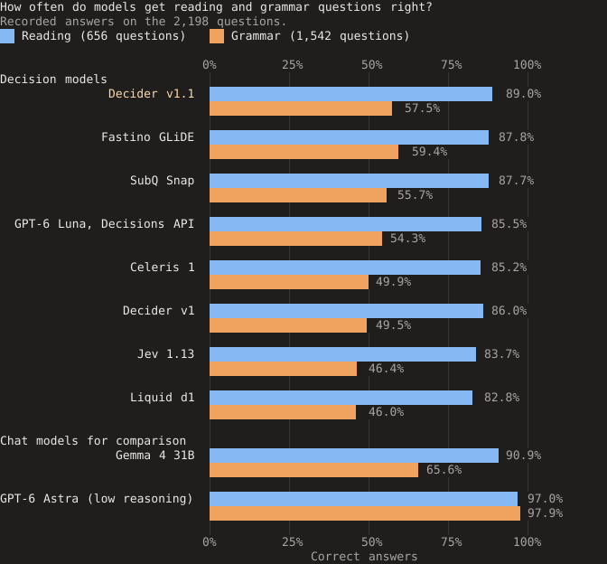
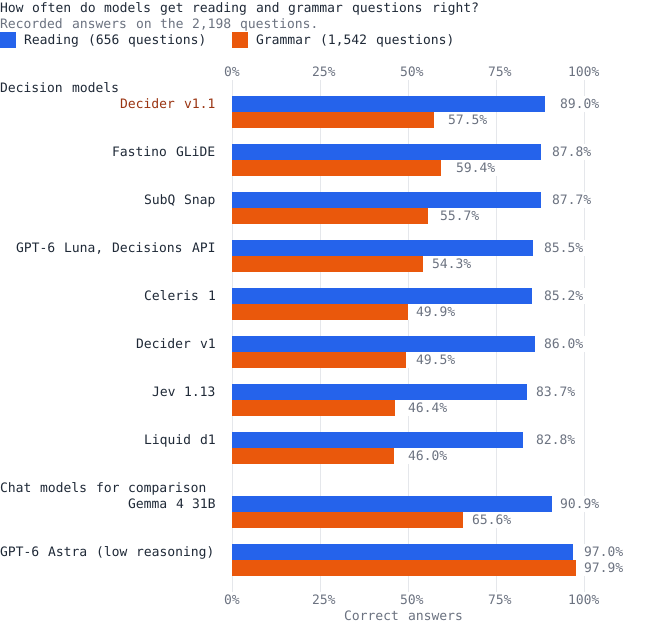
What questions did we ask?
The questions come from one practice book for the Turkish section of the TYT, Turkey's university entrance exam. There are 656 reading questions and 1,542 grammar questions across 20 topics.
Reading questions ask about the meaning of words, sentences and passages. Grammar questions ask about things such as word endings, word types and sentence structure. The test has more grammar questions, so we report the two kinds separately.
We check four things: whether the answer is right, whether confidence helps us spot mistakes, whether the answer stays the same when we ask again, and what answering costs in money and time.
Other benchmarks ask related questions. TurkishMMLU3 covers more than 10,000 Turkish questions across nine school subjects. HELM4 compares accuracy with measures such as calibration and efficiency. Our study looks at the decision models' own option scores, and at using those scores to decide when another model should answer.
We expected more mistakes, or less useful confidence, on tasks that models saw less of in training. We do not know what most models saw in training, so these results cannot show that this is the cause. Even the Qwen and Erk comparison may reflect changes beyond language training.
We measure results on these tasks. We do not compute a separate score for understanding.
How we chose which answers to keep
We tried a simple process. A cheap model answers first. We keep its answer when its confidence reaches a cutoff, and a stronger model answers the rest. This is often called routing. Earlier work such as FrugalGPT5 and RouteLLM6 also studies ways to give questions to different models to cut cost.
The first model must be cheap enough that asking it does not use up the saving. We count the cost of asking it every question, not only the questions whose answers we keep. Decider v1.1 cost $0.008 per 1,000 questions; Claude Opus 5.5 alone cost $4.93.
For each pair of models, we split the questions at random into two halves. Questions that share a reading passage stayed in the same half. We chose the cutoff on the first half. Then we kept it fixed and tested it on the other half, which we held out for testing. We repeated this 300 times. We call this rule the cutoff chosen on half the questions. Both models' answers come from recorded runs, so every result in this section replays recorded answers.
The question share is the average share of the test halves that the first model answered. The accuracy change compares the combined answers with the second model's answers on the same test questions. “Test splits with lower combined accuracy” shows how often the combined result fell below the second model alone.
Sonnet. In front of Claude Sonnet 5.5 at high reasoning, Decider v1.1 answered 48.3% of the questions on average. Accuracy was 0.10 points lower on average, and lower in 45% of the test splits. The estimated bill fell 48.1% (replayed recorded answers).
Opus. In front of Claude Opus 5.5, Decider v1.1 answered 25.2% on average. Accuracy was 0.23 points lower on average, and lower in 67% of the test splits. The estimated bill fell 25.0% (replayed recorded answers). In front of Opus, GLiDE answered less, 21.8%, but its accuracy was only 0.10 points lower.
Astra. In front of GPT-6 Astra, Decider v1.1 answered 20.9% on average. Accuracy was 0.13 points lower on average, and lower in 54% of the test splits. The estimated bill fell 20.8% (replayed recorded answers). GLiDE answered 20.1%, with accuracy 0.09 points lower. These small losses are part of the result, even when the saving looks attractive.
Jev in front of Astra answered 15.3%, with accuracy 0.11 points lower on average. It scored below Astra alone in 68% of the test splits. Gemma 4 31B in front of Astra answered 14.9%, with accuracy 0.09 points lower. Gemma is a chat model; we use the probability of the answer letter it writes as its confidence.
The second model changes the result. In front of Sonnet at high reasoning, Decider v1.1 answered 48.3%, GLiDE 44.6% and Gemma 60.9%. The best pair depends on the task and on how much accuracy loss is acceptable.
The estimated cost adds the first model's calls to the second model's calls for the questions it answers. This estimate gives each question passed to the second model the same average cost. In a new run, the remaining questions may cost more. When the first model runs on our own hardware, the dollar estimate leaves out that hardware's cost.
These replays help us choose pairs for a live test, where we send new requests to the second model. They do not measure the response time of the whole two-step setup.
Each value in this table averages 300 test splits. We choose the cutoff on one half and test it on the other. Both models' answers come from recorded runs.
Show the curve that chooses and tests each cutoff on the same questions
We choose and test these cutoffs on the same questions.
This curve helps us explore the recorded data. Because it chooses and scores each cutoff on the same questions, it can look better than a test on different questions. The results above use the separate test halves; they are the main result.
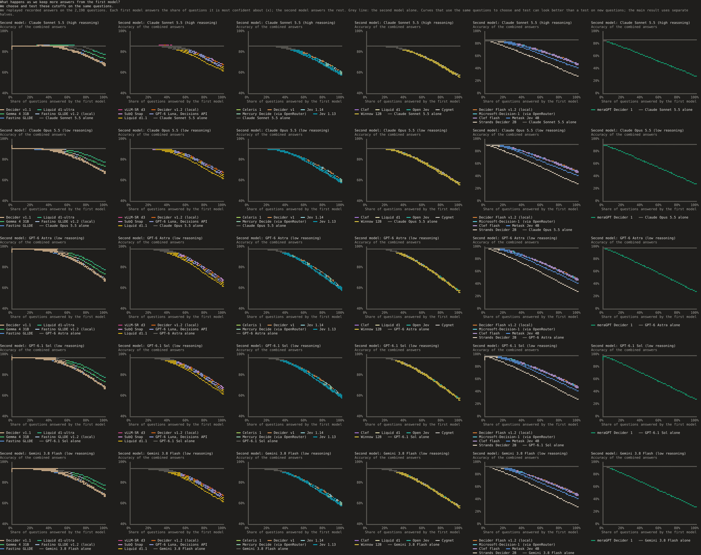
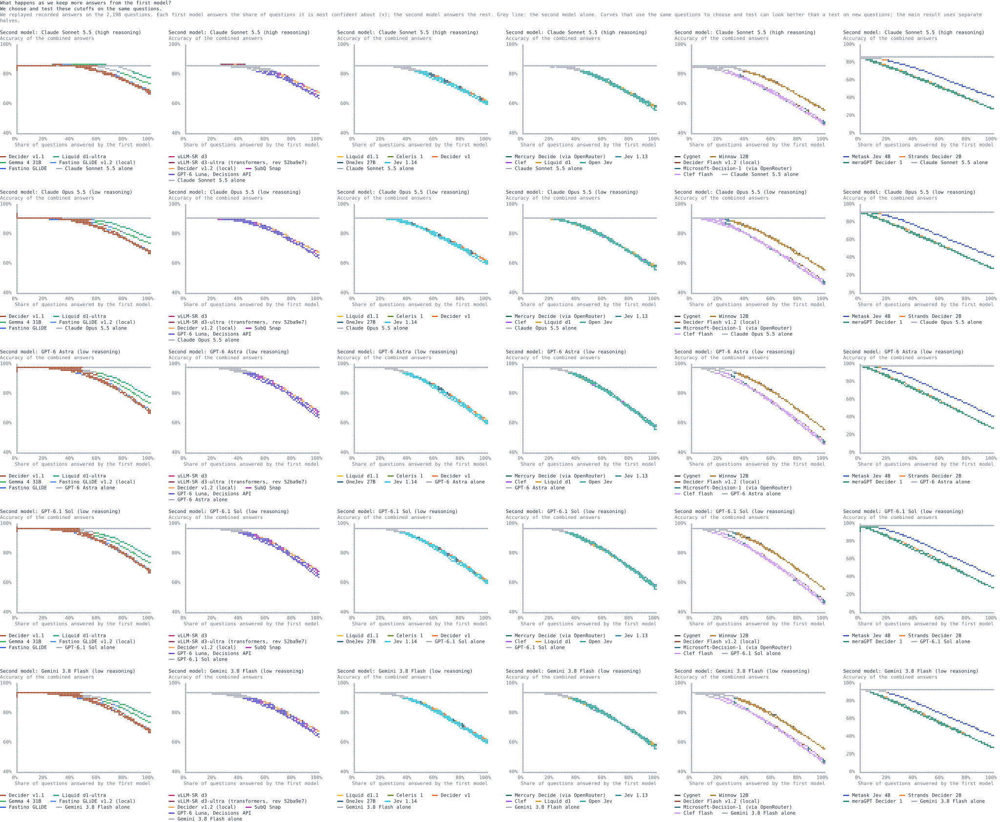
What we checked with new model answers
We ran live tests with Decider v1.1 in front of Claude Sonnet 5.5 at high reasoning, Claude Opus 5.5 and GPT-6 Astra, with each of the three rules, and earlier tests with Decider v1 in front of Sonnet and Astra. We split the questions in half and tested on one half. Decider's answers came from its recorded run. Only the second model's calls were new: it answered the questions Decider did not keep, and in a separate run it answered every test question for comparison.
The live tests section above gives their results; the table below gives the details.
Before the tests, we allowed an accuracy loss of up to 0.5 points. The observed loss was larger than that in four tests. In 12 of the 14 tests, the 95% interval also allows a larger loss. One test established a change in accuracy: Decider v1.1, then Sonnet, one question per request, with accuracy 4.73 points lower. A 95% interval is the range our statistics give for an estimate; it is not a model's confidence. These tests do not prove that future losses will stay below the limit.
Each live test used one split of the questions; the replays average 300. The live tests check the replay on new calls; they cannot replace it.
Does the first model know which questions another model will get wrong?
We also asked whether a decision model's uncertainty points to the questions that Opus, Sonnet or Astra gets wrong.
Here we measure uncertainty from all the option scores, not only the score of the chosen answer. A model has low uncertainty when it puts most of its score on one option. It has high uncertainty when it spreads its score across several options. The mathematical name for this measure is entropy.
The link was weak. The most uncertain 10% of questions held 12% to 18% of the questions on which at least one of the stronger models made a mistake. A random 10% of questions would hold about 10% of them on average.
Uncertainty may help direct a little extra attention, but it does not reliably predict a stronger model's mistakes. Low confidence does not show that Astra will fail. The table gives the ranking measures and the tests behind this conclusion.
Cost and reasoning
We report output tokens, total time and money cost separately, because they describe different things. Tokens are the small pieces of text a model reads and writes; services count and charge by them. Different models' token counts do not stand for equal amounts of computation.
What changes when a model does more reasoning?
More reasoning can improve answers, but it can also use more tokens, money and time.
Claude Sonnet 5.5 rose from 61.4% to 85.0% overall when we changed its reasoning from low to high. Its grammar score rose from 52.2% to 85.0%. It wrote about 199 output tokens per question instead of 22. The estimated cost rose from $1.90 to $3.65 per 1,000 questions, and the total time from about 9.6 to 58 minutes.
DeepSeek V4.1 Flash rose from 65.9% to 92.0% overall when we turned on reasoning and random sampling. Its grammar score rose from 56.6% to 91.4%. Because we changed both settings, we cannot separate their effects. Output rose from about 6 to 1,006 tokens per question. The run took about 114 minutes with 8 simultaneous requests, against about 12 minutes without reasoning.
Gemini 3.8 Flash rose from 93.3% to 98.1% overall when we changed its reasoning from low to high. Its grammar score rose from 92.5% to 98.5%. Output rose from about 28 to 601 tokens per question. The estimated cost rose from $0.27 to $2.42 per 1,000 questions. The total time rose from about 5.5 to 43 minutes; the high reasoning run used 4 simultaneous requests.
GLM 5.3 Flash rose from 57.8% to 78.8% overall when we turned on reasoning, which also samples at random. Its grammar score rose from 47.4% to 74.3%. Again, we cannot separate the two changes. With reasoning, it gave no answer to 128 questions, because its reasoning reached the output token limit first; these count as wrong. On the questions it answered, it scored 83.7%. Output rose from about 19 to 1,010 tokens per question, and the total time from about 2.5 to 64 minutes, with 8 simultaneous requests. With reasoning, its written confidence was also much closer to its hit rate: a calibration gap of 4.5 points against 21.0.
Short output can still go with high accuracy. GPT-6 Astra reached 97.6% with about 21 output tokens per question, and GPT-6.1 Sol reached 96.7% with about 25. Short output does not show how much computation happens inside a model.
Other research also finds that more computation while a model answers can improve results on some problems.7 Our results show the effect only for the settings above.
| Model and setup | Reasoning setting | Correct answers overall | Grammar accuracy | Output tokens per question | Estimated cost per 1,000 questions in US dollars | Total time for this test |
|---|---|---|---|---|---|---|
| Claude Sonnet 5.5 | Low reasoning | 61.4% | 52.2% | 22 | $1.90 | 9.6 min |
| Claude Sonnet 5.5 | High reasoning | 85.0% | 85.0% | 199 | $3.65 | 58 min |
| DeepSeek-V4.1-Flash | Reasoning off | 65.9% | 56.6% | 6 | No dollar estimate; see hardware and time | 12 min |
| DeepSeek-V4.1-Flash | Reasoning on | 92.0% | 91.4% | 1,006 | No dollar estimate; see hardware and time | 114 min, 8 simultaneous requests |
| Gemini 3.8 Flash | Low reasoning | 93.3% | 92.5% | 28 | $0.27 | 5.5 min |
| Gemini 3.8 Flash | High reasoning | 98.1% | 98.5% | 601 | $2.42 | 43 min, 4 simultaneous requests |
| GLM-5.3-Flash | Reasoning off | 57.8% | 47.4% | 19 | No dollar estimate; see hardware and time | 2.5 min |
| GLM-5.3-Flash | Reasoning on | 78.8% | 74.3% | 1,010 | No dollar estimate; see hardware and time | 64 min, 8 simultaneous requests |
How we estimate the money cost
We multiply the tokens recorded for each run by the provider's published prices. We report US dollars per 1,000 questions asked. The cost includes the 12 questions we later removed from scoring after the answer key review.
For runs through a provider's API, the service a program uses to call a model, we use the token counts the service reported. We have not checked the invoices. We ran the GPT and Claude models through subscriptions, so for them we calculate what the same use would cost through the API. A subscription is paid in a different way.
Providers may charge different rates for new input, reused input and storing input for reuse. We apply each rate separately. The price notes below give each rate, its source and the date we recorded it.
Most rates date from 8 October 2026. Decider v1 uses the $0.04 per million input tokens we recorded on 4 October 2026. Decider v1.1 uses the $0.02 rate recorded on 9 October 2026. Celeris-1 Decision uses the $0.04 rate recorded on 10 October 2026. Perplexity's price changed between the two Decider runs, so their cost difference is not only a model improvement.
Gemini 3.8 Flash's recorded price is an introductory price: it doubles on 1 January 2027, to $1.50 input and $7.50 output per 1M tokens. Our estimates use the price recorded for the run.
We did not estimate dollar costs for models on our own GPUs. The cost table shows the hardware and the measured time instead. Electricity, buying or renting the hardware, and keeping a service running can all matter. A missing dollar estimate does not mean the model is free.
Liquid's d1 used a free tier with no published price in our record. Its replay cost counts d1's charge as zero for that reason. This does not show that running d1 at another scale would cost nothing.
Which topics cause the most mistakes?
The table shows the share of right answers in each topic. Topics 1 to 6 cover reading, and topics 7 to 20 cover grammar. Each topic also shows its number of questions, because a score based on few questions tells us less. The results file keeps each topic's Turkish title from the book.
An overall average can hide a hard topic. These results show whether a model struggles across grammar or mainly with one kind of question. Models can also favour some option letters, whatever the question says.8
Each question has five options. Random guessing would average 20% right. Always choosing E, the most common right letter in this set, would score 22.7%. Those are baselines for comparison, not useful ways to answer the questions.
A useful next test is to change a question's wording while keeping its meaning, and then to change a grammar relationship that should change the answer. Such tests can show whether a model follows the relationship or relies on a familiar pattern. Earlier work on behavioural testing, such as CheckList9, motivates these checks.
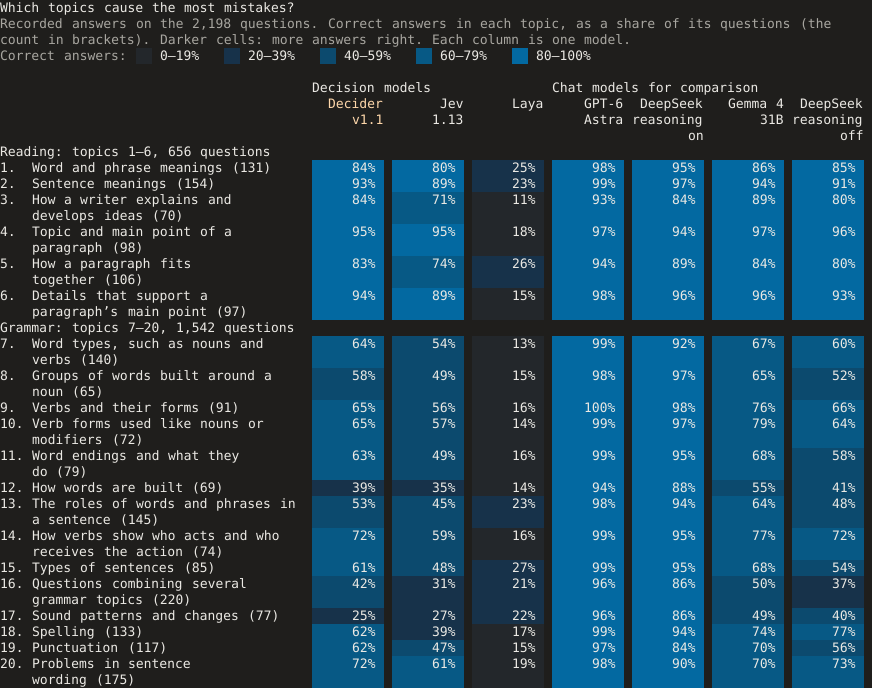
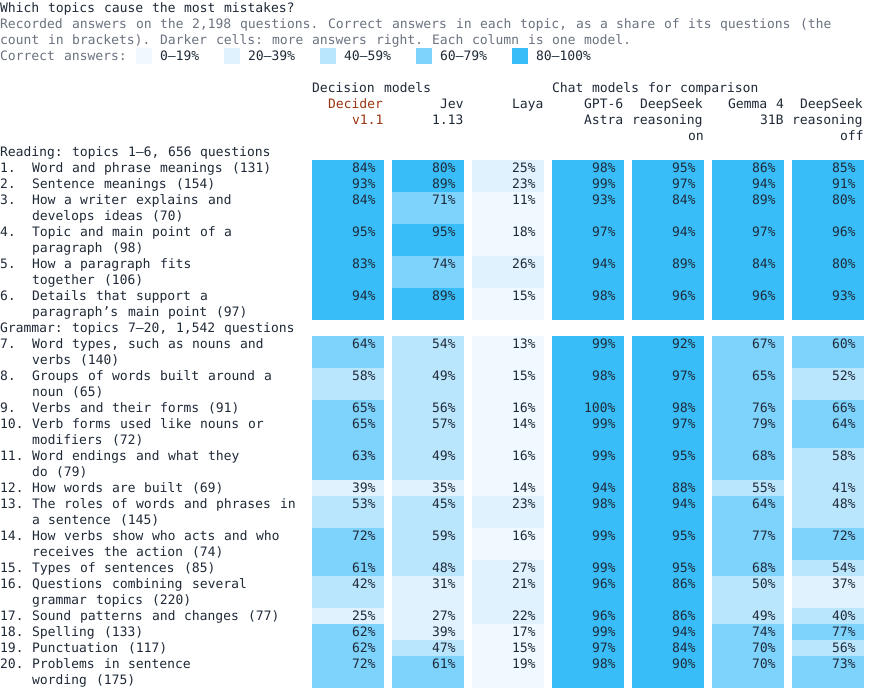
Does higher confidence mean a more reliable answer?
We ask two separate questions about confidence, for all 36 setups. We also show where each score comes from: an option score, an answer letter probability, a written estimate or agreement across ten answers.
First: does the model usually give a right answer a higher score than a wrong one? If so, the score can help us choose which answers to keep. We call this confidence ranking.
We measure it with the ranking score (AUROC). Pick one right answer and one wrong answer at random. The ranking score is how often the right answer has the higher confidence, with half credit when the two scores are equal. A ranking score of 0.50 is chance; 1.00 means every right answer ranks above every wrong one. It is not the model's accuracy.
Keeping only the most confident answers and leaving the rest is known as selective prediction.10 The “most confident 20%” column takes that share of answers with the highest scores and checks how many are right. It does not mean answers with a confidence above 20%. The 50% and 80% columns work the same way. If the cut falls among answers with the same score, we average over those answers.
These percentages describe only the answers we keep. The accuracy of a two-step setup also includes the second model's answers to the other questions.


Second: do the confidence percentages match how often the model is right? If a model gives 100 answers a score near 80%, about 80 of them should be right. We call this match calibration.
We measure the mismatch with the calibration gap (expected calibration error, ECE).11 We sort the answers into ten confidence groups: 0% to below 10%, 10% to below 20%, and so on. In each group, we compare the average confidence with the share of right answers. Then we average those gaps, giving larger groups more weight, and show the result in points. A smaller gap means a closer match. A gap of zero means a match within these groups; it does not prove that every single score is right.
The table shows the number of answers in each group. The chart leaves out groups with fewer than 20 answers, because they give very little evidence. The table keeps all groups.
A model can rank its answers well while its percentages are too high or too low. Open Jev shows this: it got 144 of the 144 answers it scored from 50% to below 60% right. On these questions, those scores were far too low.
![Chart: When a model scores answers at 80%, are about 80% right? Perplexity Decider 27B v1.1 against Claude Opus 5.5: calibration gap 3.8 against 16.5 points. Each point groups answers with similar confidence. Its position across gives their average confidence; its height gives how many of them were right. The diagonal shows where confidence matches accuracy. Points below it show confidence higher than the real hit rate; points above it show confidence lower than the real hit rate. The chart leaves out groups with fewer than 20 answers; the table keeps them.](charts/calibration-dark.svg)
![Chart: When a model scores answers at 80%, are about 80% right? Perplexity Decider 27B v1.1 against Claude Opus 5.5: calibration gap 3.8 against 16.5 points. Each point groups answers with similar confidence. Its position across gives their average confidence; its height gives how many of them were right. The diagonal shows where confidence matches accuracy. Points below it show confidence higher than the real hit rate; points above it show confidence lower than the real hit rate. The chart leaves out groups with fewer than 20 answers; the table keeps them.](charts/calibration.svg)
Show all models
![Chart: When a model scores answers at 80%, are about 80% right? All models, each with its confidence source. Each point groups answers with similar confidence. Its position across gives their average confidence; its height gives how many of them were right. The diagonal shows where confidence matches accuracy. Points below it show confidence higher than the real hit rate; points above it show confidence lower than the real hit rate. The chart leaves out groups with fewer than 20 answers; the table keeps them.](charts/calibration-all-dark.svg)
![Chart: When a model scores answers at 80%, are about 80% right? All models, each with its confidence source. Each point groups answers with similar confidence. Its position across gives their average confidence; its height gives how many of them were right. The diagonal shows where confidence matches accuracy. Points below it show confidence higher than the real hit rate; points above it show confidence lower than the real hit rate. The chart leaves out groups with fewer than 20 answers; the table keeps them.](charts/calibration-all.svg)
What did a score of 99% or more mean in practice?
The answer depends on where the score comes from.
At a cutoff of 99%, Jev got 311 of 312 answers right, d1 273 of 274, Decider v1 21 of 21, Decider v1.1 349 of 349 and GLiDE 121 of 121. GPT-6 Luna through the Decisions API got 365 of 368 right. Luna writing its own confidence got 693 of 830 right.
The number of answers matters. For Decider v1's 21 answers, the 95% interval for the error rate is 0% to 15.5%. For Decider v1.1's 349, it is 0% to 1.1%. For GLiDE's 121, it is 0% to 3.1%. None of these promises the same rate on future questions.
For Gemma, the score is the probability of writing the chosen answer letter. At scores of 99% or more, Gemma got 1,450 of 1,782 answers right, about 81%. This does not mean that Gemma told us it was 99% confident.
DeepSeek with reasoning gave every answer letter a score of at least 99%, wrong answers included. It got about 92% of them right. In that setup, this very high letter probability did little to find mistakes.
The main figures use the answer key after our review. The optional columns also show the results before the review, so you can see the effect of removing doubtful questions (see the limits of the answer key).
Can a different confidence method make the same answers easier to judge?
To answer this, we kept one set of Qwen 3.8 27B answers fixed, 1,191 right out of 2,198, and scored those same answers in four ways. This separates the quality of the answers from the quality of the score we use to judge them.
Qwen's written confidence barely ranked right answers above wrong ones: its ranking score was about 0.51. The Qwen option score, from its probability for each answer, reached about 0.78, and agreement across ten answers about 0.78. Open Jev's scores reached about 0.82.
The three Qwen methods use the same model. Open Jev is a separately trained model based on Qwen, so its row changes the model that gives the score as well as the method. Earlier studies found that written confidence tends to bunch at high values12, while the answer probabilities of large models on multiple-choice questions can match their hit rates well13.
Asking Qwen ten times also lets us pick the most common answer. That approach scored 54.3%, against 54.2% for the run that wrote a confidence score. Even when all ten answers agreed, only about 85% were right. Agreement can help, but several answers can repeat the same mistake.
This comparison shows why we test the confidence method instead of trusting an answer that sounds confident.


What can these results tell us about understanding?
A model may answer a passage question correctly and still miss a grammar rule in the same language. That tells us its performance changes from task to task. It does not, by itself, settle whether the model understands language.
The settings also matter. Sonnet answered 52.2% of the grammar questions correctly with low reasoning and 85.0% with high reasoning. DeepSeek went from 56.6% to 91.4% on grammar when we changed both its reasoning and its sampling. So we describe what a model can do under stated conditions before we make a broad claim about its understanding.
These tests measure abilities the models already have. They do not measure how quickly a model learned them. Mitchell and Krakauer discuss different meanings of understanding.1 Chollet separates a skill a model has from its ability to learn new skills.2 Our results concern the first.
Why might reading and grammar differ?
One possibility: reading draws on patterns that carry over between languages, while school grammar depends more on local rules and conventions. Differences in training, question difficulty and question format could also explain the gap. We did not control these factors well enough to choose between the explanations.
Confidence can also change by task. The ranking score (AUROC) measures how often a right answer gets higher confidence than a wrong one. Jev's ranking score fell from 0.89 on reading to 0.72 on grammar. Open Jev's fell from 0.89 to 0.75. A score that helps on reading may help less on grammar.
An Arize evaluation reports a stronger ranking score for Jev on English tasks with two labels. Our test differs in language, task and number of options. So one result cannot stand in for the other.
The table gives each setup's ranking score on reading and on grammar, with its 95% interval, and the reading score minus the grammar score. A ranking score of 0.50 is chance; 1.00 is perfect. Where both intervals reach 0.50, the evidence does not show better than chance ranking on either kind of question. We still show the observed scores.
What did adapting Qwen change?
Open Jev adds trained parts to a Qwen model: a small adapter, a part that scores the options, and a setting that adjusts the probability scale. Open Jev scored 3.8 percentage points above Qwen's plain yes or no scoring. That gap passed the test adjusted for the 41 selected comparisons (p = 0.0066). The ranking score was 0.80 for Qwen's yes or no scoring and 0.82 for Open Jev.
Open Jev's probability scale still underestimated its success on our questions. Its highest confidence on any question was 64.98%. Yet all 144 answers with confidence from 50% to below 60% were right.
In a separate analysis on version 1 of the question set, we adjusted the probability scale. The calibration gap (ECE: the average distance between confidence and the real hit rate) fell from 22.8 to 3.0 percentage points. The chosen answers did not change, so accuracy did not either. The ranking score moved from 0.8193 to 0.8191. The main results use the released model without this adjustment. Accuracy, ranking and calibration move separately, so each needs its own measurement.
What would stronger evidence look like?
We could change the words of a question and keep the relationship the answer depends on. We could then change that relationship and check that the answer changes too. McCoy, Pavlick and Linzen show how such controlled examples can reveal shortcuts that ordinary accuracy scores miss.14
We could also teach an unfamiliar rule with a fixed number of examples and test new combinations. That would test learning and generalisation more directly.
Some research looks inside models for the structures behind particular abilities.15 Our study does not look at those structures. Other research separates generalisation across wording from generalisation across reasoning problems.16 Both point to more targeted experiments than one overall score can give.
What changed when we repeated the same questions?
We repeated 8 of the 21 setups that take one question per request. Each ran five times on all 2,198 questions. We also repeated 6 of the 15 setups that take 16 questions per request. Each of these also ran five times, on a fixed set of 200 questions, with the same questions grouped in each request.
On all questions, Decider v1.1 changed no answers and Open Jev no answers. Decider v1 changed two answers. Jev changed about 14% of its answers, d1 about 10%, Celeris 1 about 9% and Qwen's yes or no scoring about 7%. Qwen with written confidence changed 44 answers, about 2%.
On the 200 question set, Astra changed its answer on 1 question, Opus on 20 questions and Sonnet with high reasoning on 31 questions. Compare these counts only within this group. The two groups use different questions and different request sizes.
We also count the questions where a model gave the same wrong answer in every run. Decider v1.1 did this on 728 of the 728 questions it got wrong at least once. A model can give the same answer every time and still be wrong, so a repeated answer is not enough on its own.
Gemma's stored repeat runs used one server session and changed its answer on 0 questions. A later rerun after a server restart changed some answers, but we did not save it. So the table cannot measure that restart effect. We stored the Gemma and DeepSeek repeats before we started to collect answer letter probabilities, so those repeats have no confidence scores.
How do we tell a score gap from ordinary variation?
Both models answer the same questions. So we look at the questions only one of them got right. If model A is right and model B wrong many more times than the reverse, that is evidence of a difference. We use an exact McNemar test for this: a paired test that uses only the questions where one model was right and the other wrong.17 Testing many pairs gives more chances to flag a difference by accident. So we adjust the p values with the Holm method, which reduces those false alarms.
The comparison table below adjusts across 41 selected pairs. The comparison groups in the accuracy table (setups that share a letter) adjust across all 630 pairs. These are different groups of tests, so a pair can pass one adjustment and not the other.
Astra scored 0.9 percentage points above Sol. On the 36 questions where only one of them was right, Astra was right on 28 and Sol on 8. The adjusted p value was 0.032 in the selected comparison table and 0.088 across all pairs. The first is below 0.05; the second is not.
A p value says how unusual a split at least this uneven would be if the two models had equal accuracy. It is not the chance that the models are equal. It is not the chance that the result is wrong.
DeepSeek with reasoning scored 1.6 points above Opus with low reasoning, but the adjusted p value was 0.53. We did not establish a difference. That does not show that their accuracy matches, either. Many comparisons in language research have too few questions to detect gaps of this size: their statistical power is low.18
A small gap may need more questions to measure well. So we report both the observed gap and its uncertainty.
These rows use an adjustment across 41 selected comparisons. The comparison letters in the accuracy table use all 630 pairs. Do not copy a result from one into the other.


How we ran the tests
We tested decision models and chat models. A decision model scores the options we give it and writes no text. A chat model writes its answer, and some can reason before they answer. Some models ran through their maker's service. Others ran on our own hardware.
Luna through the Decisions API belongs with the decision models here, because the service gives a probability for each option.
A setup is one way of running a model: how we called it, its reasoning setting, how many questions went into one request, and other settings that can change the result. We tested 36 setups of 29 models.
Why each model appears in the test
The table says why we included each model and how we ran it. Open the technical record under a row for the exact model identifier, server and hardware. The answer export keeps the same records, so anyone can inspect or repeat a setup.
| Model or setup | Why we included it |
|---|---|
| Jev 1.13.0 | We called TypeSafe's hosted decision model. It gives a probability for each option, and it is the model Open Jev compares with. Technical record
|
| Perplexity Decider 27B v1.1, Perplexity Decider 27B v1 and Liquid d1 | We called Perplexity's two decision model versions through its Decisions API, and Liquid d1 through a free tier. Perplexity says v1.1 changes both its training data and how its Qwen base model can use the input. We do not separate those two changes in this test. Technical records (3 setups)
|
| Clef | We ran Cloudflare's decision model on our own hardware. It adapts Qwen 3.8 27B and scores all the options in one pass through the model. Technical record
|
| Clef-flash | We ran Cloudflare's smaller decision model on our own hardware. It adapts Qwen 3.5 9B and uses the same scoring method and release code as Clef. Technical record
|
| Metask-Jev 4B | We ran this decision model on our own hardware. It adapts Qwen 3.5 4B. Its published training description lists Turkish among its languages. Claims about JevBench, a different test, belong to its authors and are separate from our measurements. Technical record
|
| Cygnet | We ran the released recipe with an unchanged Gemma 4 12B IT model. It reads the probability of each answer letter and adjusts the probability scale with a temperature of 3.4. Its server uses vLLM. Its authors report results on JevBench, a different test. Technical record
|
| Winnow-12B | We ran a version of Gemma 4 12B IT that its author trained for decisions. We used the recommended Q8_0 model file, which stores each weight in eight bits, and the author's server settings. The author's JevBench comparison is separate from our test. Technical record
|
| Fastino GLiDE | We called Fastino's System One API. Fastino says GLiDE makes a first assessment and reasons more on uncertain cases before it returns option probabilities. We did not run a version with that internal reasoning switched off. Technical record
|
| Celeris-1 Decision | We called Celeris's System One API. The service returns option probabilities rounded to whole percentage points. Celeris publishes no model size or design for it. Technical record
|
| Strands Decider 2B | We ran Amazon's released decision model with its own server and probability settings. It adds a small trained adapter and a scoring part to Qwen 3.5 2B Base. Technical record
|
| Laya and Laya multilingual | We ran both released decision models on our own hardware. Each reads the input and scores all options in one pass. Technical records (2 setups)
|
| GLiNER2.5 Multi (base) | We ran Fastino's model for extracting and classifying text, with 287 million parameters. We gave it the same question and options and asked it to score the options as labels. It shows how a much smaller classifier does. Technical record
|
| GLiNER2.5-multi-Decide | We ran the version of the same 287 million parameter model that Fastino trained for decisions. It uses the same server and request as the base model. Technical record
|
| Open-Jev 27B v1.1 | We ran the released open decision model on our own hardware, with its own scoring part and calibration setting. Technical record
|
| Qwen3.8-27B | We used the same base model and prompts as Open Jev, without its added trained parts. We scored each proposed answer by the model's preference for Yes over No, then turned the scores into option probabilities, with a calibration temperature of 1. The gap to Open Jev shows what its added parts do together. Technical record
|
| Qwen3.8-27B | We asked the base model to choose an option and write a confidence estimate. We show its estimate as a percentage. Technical record
|
| Qwen3.8-27B | We asked the same question ten times with random sampling. We took the most common answer, and the share of answers that agree with it as confidence. Technical record
|
| Gemini 3.8 Flash, GPT-6 Astra, GPT-6.1 Sol, Claude Opus 5.5, Claude Sonnet 5.5 and GPT-6 Luna | These chat models give comparisons for accuracy, confidence and cost. Each also writes a confidence estimate when we ask for one. Sonnet and Gemini Flash ran with low and with high reasoning. The technical records keep each provider's exact setting name. Technical records (8 setups)
|
| GPT-6 Luna | We used OpenAI's Decisions API, in beta, to get a probability for each option, one question per request. The other Luna run writes its confidence, through Codex, with 16 questions per request. The comparison changes both the access method and the request size. Technical record
|
| DeepSeek-V4.1-Flash and Gemma 4 31B | We ran these models on our own hardware and recorded the probability of each answer letter. DeepSeek ran with reasoning off and on. The reasoning run also uses sampling, so the pair does not isolate the reasoning setting. Technical records (3 setups)
|
| GLM-5.3-Flash | We ran Z.ai's model on our own hardware with TensorFold. It has 320 billion parameters in total and uses about 18 billion for each token: this design (mixture of experts) uses only selected parts of the model for each token. The server did not return answer letter probabilities, so we asked the model to write its confidence. We ran it with reasoning off and with reasoning on. The technical record lists the checkpoint, the weight and cache precision, and the speculative decoding settings. Technical records (2 setups)
|
| Qwen3-14B and Erk-14B | Erk continues the training of this Qwen model on Turkish text. We ran both on our own hardware with the same requests and settings. The extra training may change more than language knowledge. Technical records (2 setups)
|
How Open Jev turns option scores into probabilities
Open Jev starts with a Qwen model. It adds a small trained adapter and a scoring part. The adapter holds 15.5 million adjustable values, about 0.06% of the base model's size. It changes how the base model behaves without replacing all its weights (the stored values that shape a model). The technical name is a LoRA adapter.
For each option, Open Jev builds a prompt with the question and that proposed answer. The question part shows all the options, but the model scores each of these prompts on its own.
The scoring part (the scoring head) gives each option a number. A formula called softmax turns these numbers into probabilities that add up to 100%. Before that step, the released setup divides the scores by 2.53. This setting, the calibration temperature, makes the probabilities more or less concentrated. It is a setting, not a confidence percentage.
The scoring part starts from Qwen's preference for "Yes" over "No". Training adjusts the adapter and the scoring part from that starting point. The model card explains the training stages and the data its makers used to choose the temperature.
Jev and Open Jev also offer a rescaled score. It puts equal probability across all options at 0% and all probability on one option at 100%. We use the chosen option's ordinary probability as confidence.
A different positive calibration temperature never changes which option wins within a question. It can change the order of confidence scores across questions. The small change in the ranking score in our version 1 adjustment was an observed result, not a rule.
How we checked the questions and answer key
We use version 2 of the question set. Our first copy of the questions from the book lost formatting that some grammar questions needed. Of 229 questions that pointed to underlined words, 196 had lost the underline. Another 186 questions had lost the numbers attached to words. We copied the flagged questions again and checked them against the book's page images.
Version 2 changes the text or answer key of 375 questions. It also makes 12 more questions possible to score. A later review of the answer key removed 12 questions whose correct answers we could not confirm. We score 2,198 questions; 12 of them stay marked as uncertain. These counts come from separate checks. In total, 493 questions carry a verified label.
We leave the removed questions out of accuracy and confidence results. The time, tokens and money we spent on them stay in the totals.
The repair table splits the questions we changed from the questions we left unchanged. For the models we tested on both versions, accuracy on the repaired questions rose by 11 to 30 percentage points, apart from Laya and Laya multilingual, whose accuracy on them did not rise. Repeated runs can also vary. In requests of 16 questions, a repaired question can also sit next to different questions.
The source is TYT IQ Türkçe Soru Kütüphanesi (TYT IQ Turkish Question Library), published by Paraf Yayınları (ISBN 978-625-7423-18-2; the imprint gives © 2022 and no edition number). We do not publish the copyrighted questions or page images.
Someone with the book can rebuild a matching question set with the extraction and repair scripts in the repository's runner folder. The scripts read the book's pages into the database format our test program uses and record each repair. The answer export keeps each question's ID, topic, page and printed number, so a rebuilt set can be matched to ours question by question. The results file gives each topic's printed Turkish title next to the English label this page uses.
What we sent to each model
We sent each question with its lettered options. We asked chat models for the letter of their answer, with no explanation, plus a confidence score where the setup needed one. The instruction was in Turkish. We asked for a structured reply (JSON) that our program could read.
Most chat model setups got 16 questions per request. Decision models, Luna through the Decisions API, GLiNER and the Qwen 3.8 setups got one question per request. In a separate test, Astra and Gemma also got one question per request, on 200 questions.
For a decision model, the request holds the whole question, all the options and an instruction to find the right answer. A small connector turns that request into the format each service expects. OpenAI's Decisions API takes it under its own field names.
We count a missing answer, a refusal or a letter outside the options as wrong. In the main runs, the Decisions API declined to answer 4 questions without giving a reason. GLM 5.3 Flash with reasoning left 128 questions without an answer: its reasoning hit the 65,536-token output limit before it answered. DeepSeek's reasoning run had the same limit and left 0 questions without an answer.
Which settings did we use?
For chat models on our own hardware without reasoning, we used greedy decoding: the model always takes the most likely next token. A token is a small piece of text, sometimes part of a word.
For DeepSeek with reasoning, we used sampling, because greedy decoding made its reasoning go round in loops. Sampling picks the next token at random, weighted by the probabilities and the settings. Its settings were temperature 1.0 and top p 1.0. GLM 5.3 Flash with reasoning used its server's default sampling: temperature 1.0 and top p 0.95 (Z.ai's generation settings) and top k 20, with TensorFold's high reasoning setting.
For Qwen's ten-answer setup, we used temperature 0.7, top p 0.8, top k 20 and a presence penalty of 1.5. The sampling temperature controls how strongly sampling favours likely tokens. Top p and top k limit the pool of candidate tokens. A presence penalty discourages tokens the model already used. These are generation settings, not confidence scores.
For GPT, Claude and Gemini, we used the lowest reasoning setting tested here, plus extra high reasoning runs for Sonnet and Gemini Flash. Some access methods do not let us set the sampling temperature. Gemini reported no reasoning tokens at its low setting.
Where it applied, we replaced agent instructions with a short test instruction, ignored local configuration and turned tools off. The reported runs did not browse the web or run commands. Earlier trial runs could find the source book online, so we had to turn tools off.
Where does each confidence score come from?
Option score. Decision models return a probability for each option. We use the score of the chosen option. GLiNER and Qwen's yes or no scoring also give option scores.
Written estimate. GPT, Claude, Gemini, GLM and Qwen with written confidence write a confidence number next to their answer. We show that number as a percentage.
Answer letter probability. For Gemma, DeepSeek, Qwen 3 14B and Erk, we use the probability that the model writes the chosen letter. We rescale the probabilities of the option letters so that they add up to 100%. With reasoning on, the letter comes after the reasoning. A likely next letter is not automatically a good estimate of being right.
Agreement across ten answers. We ask Qwen the same question ten times. Confidence is the share of answers that agree with the most common answer. If eight of the ten answers say B, the score is 80%.
These scores come from different mechanisms. We test each one against the real answers before we trust it.
Some services round their scores. Luna through the Decisions API gave only 80 different scores across 2,194 answered questions. Celeris gave 75 across 2,198, none above 97%. Rounding makes many answers share a score, and our calculations handle those shared scores explicitly.
How we measure uncertainty in the results
A result from one set of questions is an estimate. A different set of questions could give a different result. We use 95% intervals to show part of that possible variation.
For the ranking score and for accuracy among kept answers, we make 1,000 new samples by drawing from the recorded questions. A question can appear more than once in a sample. We recompute the measure on each sample. The technical name is bootstrapping. The 14 questions that share seven passages stay together in every sample.
For small groups of answers, such as the answers at 99% confidence or higher, we use a Wilson interval. This method still gives an upper limit above zero for the error rate when a group has no observed mistakes.
A 95% interval comes from a method built to cover the true value in about 95% of repeated studies, under its assumptions. It is not a model's confidence score. It does not mean that one answer has a 95% chance of being right.
We compare two models on the questions where only one of them was right, with the exact McNemar test. The selected comparison table applies the Holm adjustment across 41 tests. The comparison groups apply it across all 630 pairs. The live tests report their own comparisons without this adjustment.
The replays with a cutoff chosen on half the questions use 300 random splits of the questions into two halves. Each split keeps the questions of a shared passage in the same half. The averages describe these splits of one question set. They are not results on new question sets.
How we measure waiting time and processing rate
Response time is the time from sending a request until its reply finishes, measured on our computer. It includes the network and any waits before a retry. A request may hold one question or 16.
Processing rate is the number of answered questions divided by the time during which requests were active. We show it as questions per minute. When requests overlap, we count the elapsed active time once, not the sum of the overlapping times.
DeepSeek-V4.1-Flash (reasoning on) and GLM-5.3-Flash (reasoning on) sent eight requests at a time. Gemini 3.8 Flash (high reasoning), Fastino GLiDE and GPT-6 Luna (Decisions API, beta) sent four requests at a time. These choices, along with hardware, network conditions and service limits, affect the measured rate.
Some early runs recorded the total time but not the time of each request. For those, we take response times from later runs of the same setup. Perplexity Decider 27B v1, Jev 1.13.0, Liquid d1, Open-Jev 27B v1.1, Qwen3.8-27B (stated confidence, reasoning off) and Qwen3.8-27B (yes/no scoring) use their four later repeat runs on all 2,198 questions. GPT-6 Astra (low reasoning), Claude Opus 5.5 (low reasoning) and Claude Sonnet 5.5 (high reasoning) use their five repeat runs on the same 200 questions. Claude Sonnet 5.5 (low reasoning), Laya and Laya multilingual have no recorded response times.
Astra's typical response time is 13.04 seconds for a request of 16 questions, from the repeated 200 question tests. A separate test with one question per request gives 6.14 seconds. For Gemma, the typical times are 3.97 seconds for 16 questions and 0.29 seconds for one question. The price and speed table names the request size beside every time.
Some decision services report fixed output token charges even though they write no text. Their token counts follow billing rules as much as they record work. They are not comparable amounts of written reasoning.
What these results do not establish
The models may have seen the questions before
The source book is available online. A model may have seen its questions or answers during training. Researchers call this contamination, and few tests measure it.19 Turning off web access during our test stops a live lookup. It cannot remove what a model saw earlier.
We made two extra checks. We gave the 40 Turkish questions of the June 2026 TYT exam to 9 models. They got between 24 and 40 right. We tested them in October, after the exam was public, so these questions may not be new to the models either.
In the other check, we replaced the text of the correct option with a copy of a wrong option. Astra still chose the original correct letter 31.0% of the time and the copy 28.4% of the time. The test did not establish a preference for the original letter (p = 0.19). This checks one form of answer recall. It does not rule out that the model knew the question.
Some answer keys remain uncertain
Wrong answer keys are common in test sets and can change model rankings.20 We reviewed 25 disputed cases. They include confident mistakes and questions where several strong models disagreed with the printed key. We confirmed 13 keys and removed 12 questions. In six of the removals, the page image did not settle the answer. In the other six, we could not establish the printed key against the other reading.
Removing these questions raised most models' accuracy by no more than about 0.5 percentage points. It had a bigger effect on the small groups of confident mistakes. Among the wrong answers at 99% confidence or higher, the review removed six of the eight from Qwen's yes or no scoring, three of Astra's eight, two of Jev's three and two of d1's three. Later runs did not get the same targeted review.
Decider v1.1 ran after the review, on the cleaned question set. It gave none of the 12 questions still marked uncertain a confidence of 99% or more. So its result at 99% (0 wrong of 349 kept) does not depend on the review.
The settings and the task matter
Reasoning, sampling, request size, numerical precision, server software and server state can change answers. On the separate 200 question tests, Astra got 197 right with one question per request. It got 195 or 196 right in its five runs with 16 questions per request. Gemma got 137 right with one question per request, and 141 in its five runs with 16, which came from an earlier server session. These tests did not establish an accuracy difference. They do not prove that the settings give matching results, either.
This study covers one language, one book and a question set with more grammar than reading (70% of the questions are grammar). Broader claims need more datasets and better checks of what models saw in training. A confidence cutoff for a new task needs its own test.
Download the data and check our calculations
Results updated 11 October 2026 · Results snapshot deb56771 · Question set questions-v2.sqlite (797ad6c8)
These identifiers tell you which data produced a table or a downloaded figure. The sharing images carry them too.
The results file holds the summary numbers. The answer export holds the recorded choices, the confidence scores at full precision, the model settings, the prompt templates and the question IDs. It does not hold the copyrighted question text. The metric code shows how we compute each statistic.
This snapshot holds 36 main setups, 62 extra repeat runs, 20 runs from the 14 live tests, two cheaper models tested alone on the same test questions, and two more runs with one question per request, on 200 questions.
From a copy of the repository, reproduce.py recomputes from the answer export each main setup's accuracy, ranking score, calibration gap and answers at 99% confidence or higher, before and after the answer key review. It also recomputes the 41 selected comparisons and the comparison groups, the repeat statistics, every price, every replay of two models with its 300 splits, the replay of Decider v1.1 this page leads with, and every live test. It checks all of these against the results file: all 1,946 checks match.
One gap remains. reproduce.py does not yet check the bootstrap intervals. They come from the same metric code and exported answers, so you can inspect them.
Some things are not public. The question text and the book's pages are copyrighted, so asking the questions again needs a rebuilt question set (see How we checked the questions and answer key). The 40 exam questions stay private; we publish only the scores. The raw model replies behind the token counts are not in the export. The runner folder holds the test code, the run scripts and the server wrappers for the models we ran on our own hardware, with setup instructions.
Sources and related research
These sources explain the methods and the earlier research we discuss above. Our measurements come from the recorded runs in Download the data and check our calculations.
- Mitchell, M., & Krakauer, D. C. (2023). The debate over understanding in AI's large language models. Proceedings of the National Academy of Sciences, 120(13), e2215907120. https://doi.org/10.1073/pnas.2215907120 ↩ ↩
- Chollet, F. (2019). On the Measure of Intelligence. arXiv:1911.01547. https://arxiv.org/abs/1911.01547 ↩ ↩
- Yüksel, A., Köksal, A., Şenel, L. K., Korhonen, A., & Schütze, H. (2024). TurkishMMLU: Measuring Massive Multitask Language Understanding in Turkish. Findings of EMNLP 2024. https://aclanthology.org/2024.findings-emnlp.413/ ↩
- Liang, P., et al. (2023). Holistic Evaluation of Language Models. Transactions on Machine Learning Research. https://arxiv.org/abs/2211.09110 ↩
- Chen, L., Zaharia, M., & Zou, J. (2023). FrugalGPT: How to Use Large Language Models While Reducing Cost and Improving Performance. arXiv:2305.05176. https://arxiv.org/abs/2305.05176 ↩
- Ong, I., et al. (2024). RouteLLM: Learning to Route LLMs with Preference Data. arXiv:2406.18665. https://arxiv.org/abs/2406.18665 ↩
- Snell, C., Lee, J., Xu, K., & Kumar, A. (2024). Scaling LLM Test-Time Compute Optimally can be More Effective than Scaling Model Parameters. arXiv:2408.03314. https://arxiv.org/abs/2408.03314 ↩
- Zheng, C., Zhou, H., Meng, F., Zhou, J., & Huang, M. (2024). Large Language Models Are Not Robust Multiple Choice Selectors. ICLR 2024. https://arxiv.org/abs/2309.03882 ↩
- Ribeiro, M. T., Wu, T., Guestrin, C., & Singh, S. (2020). Beyond Accuracy: Behavioral Testing of NLP Models with CheckList. Proceedings of ACL, pp. 4902–4912. https://aclanthology.org/2020.acl-main.442/ ↩
- Geifman, Y., & El-Yaniv, R. (2017). Selective Classification for Deep Neural Networks. Advances in Neural Information Processing Systems 30. https://arxiv.org/abs/1705.08500 ↩
- Guo, C., Pleiss, G., Sun, Y., & Weinberger, K. Q. (2017). On Calibration of Modern Neural Networks. Proceedings of ICML, PMLR 70, 1321–1330. https://arxiv.org/abs/1706.04599 ↩
- Xiong, M., et al. (2024). Can LLMs Express Their Uncertainty? An Empirical Evaluation of Confidence Elicitation in LLMs. ICLR 2024. https://arxiv.org/abs/2306.13063 ↩
- Kadavath, S., et al. (2022). Language Models (Mostly) Know What They Know. arXiv:2207.05221. https://arxiv.org/abs/2207.05221 ↩
- McCoy, R. T., Pavlick, E., & Linzen, T. (2019). Right for the Wrong Reasons: Diagnosing Syntactic Heuristics in Natural Language Inference. Proceedings of ACL, pp. 3428–3448. https://aclanthology.org/P19-1334/ ↩
- Beckmann, P., & Queloz, M. (2026). Mechanistic indicators of understanding in large language models. Philosophical Studies, 183, 1747–1792. https://doi.org/10.1007/s11098-026-02513-1 ↩
- Blanck, R., & Noble, B. (2026). Logic, inference, understanding: cross-domain generalization for generative language models. Frontiers in Artificial Intelligence, 9, 1800372. https://doi.org/10.3389/frai.2026.1800372 ↩
- Dietterich, T. G. (1998). Approximate Statistical Tests for Comparing Supervised Classification Learning Algorithms. Neural Computation, 10(7), 1895–1923. https://doi.org/10.1162/089976698300017197 ↩
- Card, D., Henderson, P., Khandelwal, U., Jia, R., Mahowald, K., & Jurafsky, D. (2020). With Little Power Comes Great Responsibility. Proceedings of EMNLP 2020, pp. 9263–9274. https://aclanthology.org/2020.emnlp-main.745/ ↩
- Sainz, O., et al. (2023). NLP Evaluation in trouble: On the Need to Measure LLM Data Contamination for each Benchmark. Findings of EMNLP 2023. https://arxiv.org/abs/2310.18018 ↩
- Northcutt, C. G., Athalye, A., & Mueller, J. (2021). Pervasive Label Errors in Test Sets Destabilize Machine Learning Benchmarks. NeurIPS 2021 Datasets and Benchmarks Track. https://arxiv.org/abs/2103.14749 ↩